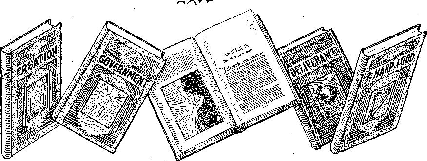

A JOURNAL OF FACT HOPE AND. COURAGE
m this issue
LIBERTY TO PREACH
CARING FOR WORK-SEEKERS
THE “SPORT” OF HUNTING
THE EHRET SYSTEM
GREED AND GEOGRAPHY
TO HIS GLORY
lecture broadcast by Judge Rutherford
EVERY OTHER WEDNESDAY —..... ' nr,.,.,.. ■
5c a copy - $1.00 a year - Canada & Foreign $ 1.50
Volume X-No.248 March 20, 1929
Contents
...........=:-::.K^CT . ----------------------------'• rr—r-~uKM
Labor and Economics
Treatment of Work-Seekers in Denmark aid in Britain . . « 306
Social and Educational News of the Day .
Manufacturing and Mining: Electric Power in Canada .
Finance—Commerce—Transportation Agreement in Restraint of Trade
Political—Domestic and I'oueign Events in Canada
The Louvain Altar-Piece . . . '
Agriculture and Husbandry The “Sport” of Hunting
Science and Invention A Few Paragraphs About X-Rays . . . . ’
Home and Health
The Ehret System of Elimination
Discontinued Making Aluminum Ware
Travel and Miscellany Greed and Geography . .
Religion and Philosophy Doctor Goke’s New Commentary
Salvation Anny's Forty-three Millions ..........
De Haan’s Persimmon ............. . . . 465
The Children’s Own Kadio Story
Published every other Wednesday at 117 Adams Street, Brooklyn. N. Y., U. S. A., by WOODWORTH, KNORR & MARTIN '
Copartners and Proprietors Address: lit Adams Street, Brooklyn, N. Y., V. S. A.
CLAYTON J. WOODWORTH .. Editor ROBERT J. MARTIN .. Business Manager NATHAN H. KNORR . . Secretary and Treasurer
Five Cents a Copy—81.00 a Year Make Remittances to Till' GOLDEN AGE Notice to Subscribers: We do not, as a rule, send an acknowledgment of a renewal or a new subscription. A renewal blank (carrying notice of expiration) is sent with the journal one month before the subscription expires. Change of address, when requested, may be expected to appear on address label within one month.
Foreign Offices
British . ......34 Craven Terrace, London, W. 2, ICngland
Canadian ..... 40 Irwin Avenue, Toronto 5, Ontario, Canada Australasian..... 495 Collins Street, Melbourne, Australia
South African ..... 6 Lelie Street, Cape.Town, South Africa
Entered as second-class matter at Brooklyn, N. Y., under the Act of March 3, 1879.
Volume X Brooklyn, N. Y., Wednesday, March 20, 1929 Number 241
BECAUSE of the repeated attempts made by clergymen, and by police officers acting under instruction, to prevent the preaching of the Gospel of God’s kingdom under Christ as earth’s rightful Ruler, it is deemed advisable to set out the following:
Every consecrated and anointed Christian is divinely authorized and empowered to preach the Gospel. By that is meant he has the right to exercise his religious liberty because God has so ordained such a one to preach. In His law it is written: “The Spirit of the Lord God is upon me; because the Lord hath anointed me to preach good tidings unto the meek: he hath sent me to bind up the brokenhearted, to proclaim liberty to the captives, and the opening of the prison to them that are bound; to proclaim the acceptable year of the Lord, and the day of vengeance of our God; to comfort all that mourn.”—Isa. 61:1, 2.
The work of a Christian acting under this divine authority is charitable, benevolent, beneficial and of necessity because its purpose and effort is to teach, aid and comfort humanity. It is not carried on for a selfish purpose or a pecuniary profit.
In the United States every Christian has full liberty to preach the Gospel in any manner he may choose, because the fundamental law of the land guarantees that right. The first amendment to the Constitution of the United States reads:
Congress shall make no law respecting an establishment of religion, or prohibiting the free exercise thereof ; or abridging the freedom of speech or of the press; or the right of the people peaceably to assemble, and to petition the Government for a redress of grievances.
No one has the right or legal authority to interfere with or interrupt the exercise of one’s religion or the worship of God according to the dictates of his own conscience. No state, city, town, village or other municipality or body cor-
By Judge J. F. Rutherford
porate has any legal power or authority to enact and enforce a law or an ordinance that is contrary to the provisioir of the Constitution of the United States as above set forth.
The International Bible Students Association is an organization of Christian people, who have consecrated and devoted themselves to the service of God. They exercise and practise pure and undefiled religion as set forth in the Bible, which is the Word of God. The exercise by them of that religious faith as set forth in the Bible is not for selfish purposes. It is to glorify God and to do good to humanity. They do not seek to make money out of the practice of religion. They follow some honorable employment or avocation to provide the things decent and honest for themselves and families in the sight of God and man. The exercise of their religion in serving God is a divinely-given privilege and duty as each one so believes. Each one who is devoted to God and to His cause of righteousness takes advantage of such opportunities as he may have to tell others about the gracious plan of God for the blessing of the people. The organization known as the International Bible Students Association is charitable, benevolent and beneficial because seeking only the good of others in the name of the Lord.
In America and in many other countries of the world, Sunday is the day set aside and intended to be devoted to the service of God. The method of exercising their religious belief and freedom on Sunday and other days, as adopted and used by the Bible Students, is in the following manner, to wit: When possible on weekdays, and on Sunday mornings as a rule, these Christian Bible Students carry with them books and booklets containing printed sermons or discourses which explain and give instruction on the Bible. With these they go from house to
Came and respectfully call upon the persons calling in the houses and politely speak to 1 1 m something in this manner:
ike some of these I shall be pleased to leave them Sunday
many people are now studying their Bibles in their I1 mcs. The radio has helped them greatly in this. To further aid the people to understand the Bible, I am ,'liilmg on you to show you a splendid method to obtain a knowledge of the Bible. This is our method of preaching the Gospel. You have a Bible, of course. 1 Love here a number of sermons or discourses exI jilaining the Bible, and with these you can sit in your i|Ome and get a knowledge of God’s Word without । ' 10 necessity of going to some public gathering. Instead of taking up a collection as the churches do, we bring you these discourses in book form and take only a nominal sum for the same to cover the ,'ost of production and delivery in order that we may unit more and take them to the people. If you would have with you. You will derive much comfort and benefit i lorn them as you see how God will soon relieve the Kople from oppression and bless them with liberty and happiness.
.1; If there are several persons in the same neigh-iborhood who are interested in the study of the ■Bible, the one calling with the book's will arrange a, meeting in some home and show those who at-icnd how to adopt a systematic study of the ■Bible. The entire work is for the benefit of the people. There is no atterilpt to induce any one do join any organization. Whether the persons called upon are Catholic or Protestant, Jew or iGentile, it is the pleasure of the Bible Students to aid them all to understand the Bible.
: No one of the Bible Students is engaged in ! the selling of books as a business and for the purpose of making a livelihood out of the same.
। Were it not for the opportunity of thus exercising their religious freedom in teaching the people concerning God’s plan, they would not engage in it for one moment.
Ordinances
Many towns and cities have enacted ordinances to regulate the selling of goods, wares and merchandise from door to door, defining and regulating soliciting, peddling, etc. Some of these ordinances are made specifically applicable to Sunday. Samples of such ordinances are set out, to wit:
No person shall on Sunda,y labor at any trade or calling, or employ others in labor or other business except it be in the ordinary household offices of daily necessity or any other work of necessity or charity.
It shall be unlawful to sell on the streets or from house to house by Canvassing, selling and delivering any other articles, goods or merchandise of any kind, including novelties of every kind and description.
That from and after the passage of this act, no person or persons shall sell or expose for sale within the county as a hawker, peddler or travelling merchant, any foreign or domestic goods, wares or merchandise, etc.
Every person who shall do or require any employee to do any secular business or labor except works of necessity or mercy; or unless required by necessity or mercy to keep open any shop, warehouse or manufacturing or mechanical establishment, or sell or expose for sale any goods, wares or merchandise.
All manner of public selling or offering for sale of any property on Sunday is prohibited, except as follows: [The exceptions refer to selling of food and other things of necessity.]
By common consent of the people the first day of the week, called Sunday, is set aside for rest and the practice of religion. The law of the United States and. of every state recognizes this. No law can be passed, of course, compelling the practice of religion on Sunday; but the laws protect any one exercising his religion on Sunday in the manner chosen by the one so exercising, provided the exercising thereof does not disturb the public peace. The work of religious organizations is deemed charitable and benevolent and of necessity within the meaning of the law. In prohibiting labor on Sunday and the sale of goods, wares and merchandise on Sunday, the law makes exceptions to labor of necessity and charity and the sale of necessities and the practice of religion. In consideration of what is embraced within the term charity, the Supreme Court of Massachusetts said:
In considering what is lawful or fit to be done on the Lord’s Day, “charity” must include everything which proceeds from a sense of moral duty or a feeling of kindness and humanity and is intended wholly for the purpose of relief or comfort of another and not for one’s own benefit or pleasure. (13 Mass. 32350, 351; 117 Mass. 65 ■ 8 Am. Rep. 366)
In Allen vs. Duffie, Supreme Court of Michigan (38 Am. Rep. 139), it is said:
We shall Avastc no time upon the question whether the business done in taking the subscriptions was a work of necessity. No doubt the time chosen was the most convenient time for taking up the subscriptions, because the persons concerned would be likely to be generally present. It was never doubted, so far as we know, that all the necessary or uszial work connected with religious work was work of charity. If it were not so, the minister who preaches, the organist and precentor who furnish the music, and the sexton who cares for the building on Sunday, would be violating the law every day they performed service for their religious society, and not only would be precluded from recovering compensation, but might be punished for services which are proper in themselves, and for which the day is specially set apart. But this work is not illegal, because it is in a true sense, and indeed in the very highest sense, charitable. Religious societies are founded to do good to mankind.
Religious societies solicit moneys for their needs, and take subscriptions at their regular meetings on the first day of the week. . . . These regular Sabbath offerings, as they are called, are limited sometimes to gifts for the poor; etc., but quite often they embrace gifts for the general needs of the society, including repairs of the church, payment of taxes, and numerous other needs which do not differ at all from the needs of ordinary business associations.
Contracts for services on Sunday of the preacher, the sexton, the organist, and the singers are not illegal, although these persons may engage in such employment as a means of livelihood.
In M. E. Church vs. Donnell, the Supreme Court of Michigan held (43 Michigan 4 N. W. 427):
Taking collections and subscriptions on Sunday to carry on the work of a religious organization may not, strictly speaking, be deemed a part of religious worship, but these are means for its support and come within the exception of the statute prohibiting any ' labor except that of necessity and charity.
It could readily be determined that a minister of the Gospel who serves his congregation on Sunday, though engaged in his usual calling, is not violating the statute, as such work clearly conies within the exception as to works of charity; and even without the exception a construction holding such a person guilty would be manifestly repugnant to the spirit of the law. (Ross vs. State (Ind.), 36 N. E. Rep. 167169) ■
If mere convenience is to be the test of necessity, any work on Sunday may be shown to be necessary under some circumstances. (Jones vs. Andover, 10 Allen 18)
Convenience means that which is for the good of another. '
The Bible Students go privately to the home and talk to one or two individuals at a time and never disturb any one’s peace. In Melvin vs. Easley, 52 N.C. 356, the Court said:
The statute in its operation is confined to manual, visible or noisy labor, such as is calculated to disturb other people, for example, keeping open shop or working at a blacksmith’s anvil. The Legislature has power to prohibit labor of this kind on Sunday on the ; ground of public decency. But when it goes further and . . . prohibits labor which is done in private the power is exceeded and the statute is void. (Rodman vs. Robinson, 134 N.C. 507; State vs. Medlin, 170 N.C. 684.)
A clergyman occupies his pulpit on Sunday, talks to the people and solicits money and receives it. Often this is for his salary, or it may be for missionary work; but whatever it is for, the courts held that such is not a violation of the law. In discussing the matter of Sunday laws the Supreme Court of Idaho, in re Hull 18 Idaho 175, said:
This class of legislation is upheld solely as an exercise of the police power of the state. The prohibition of public amusements on Sunday must therefore rest on the theory that it is necessary either for the protection of the public morals, the public health, or the public peace and safety.
Calling at a person’s home on Sunday and quietly talking to the resident about the Word of God surely could not be held as interfering with public morals, public health or public peace and safety. The real purpose of laws regulating what shall be done on Sunday is to restrain business and commerical transactions that are carried on ordinarily on other days of the week. The work of the Bible Students is neither business nor commercial transactions. (37 Cyc. 545, 546; Bennet vs. Brooks, 91 Mass. 118)
Sunday laws are directed against manual labor or conduct of business of like nature. (Perkey vs. Commonwealth 134 Va. 713)
Works of necessity and charity are generally excepted by law’s of the states. (37 Cyc. 552)
In the case of Rodman vs. Robinson 134 N. C. 506 to 513, Chief Justice said:
A contract entered into on Sunday is not invalid at common law. Clark on Conf., p. 393; Drury v. De Fontaine; 1 Taunton, 131 (in which it was held that a vendor could recover the price of a horse sold on Sunday); Benjamin on Sales, section 5'22. Our statute, The Code, section 3782, is copied almost verba dm from the first part of the statute, 29 Car. 11, chapter 17 (1678). The other part forbidding service ri process on Sunday is omitted from our statute, which merely provides that ‘ ‘ on the Lord’s Day, commonly called Sunday, no tradesman, artificer, planter, laborer or other person shall do or exercise any labor, business or work of his ordinary calling, upon pain that every person so offending shall forfeit and pay one dollar”. This part was construed by Lam Mansfield in Drury vs. De Fontaine, supra, not to invalidate a sale of a horse on Sunday when the sale was
I not a part of tlie vendor’s ordinary calling. This statute is the foundation of nearly all the Sunday ( legislation in this country.
In the case of Melvin v. Easley, 52 N.C. 356, | the Court said:
The statute in its operation is confined to manual, visible or noisy labor, such as is calculated to disturb 1 other people, for example, keeping open shop or working at a blacksmith’s anvil. The Legislature has power to prohibit labor of this kind on Sunday on the p1 ground of public decency. But when it goes further , and . . . prohibits labor which is done in private the a! power is exceeded and the statute is void.
i’i In that case it was held that selling a horse on ;'i Sunday was not forbidden by the statute, as deal-j'i ing in horses was not Melvin’s “ordinary calling”, 1 Again, it is said in State v. Ricketts, 74 N. C. 192: • “In this State every act may lawfully be done on Sun's day which may lawfully be done on any other day, । unless there is some statute forbidding it to be done ■ on that day.” This has been cited and approved, f White v. Morris, 107 N.C. at p. 99 (in which Davis,
■ J., calls attention' to the fact that prior to the Code
; civil process could not legally be served on Sunday, but now the restriction applies only to forbid arrests in civil actions on that day) ; approved also in State v. Penley, 107 N. C., 808; Ashe, J., in State v. Mc-Gimsey, 80 N. C., 377; 30 Am. Rep. 90; and State v. Howard, 82 N.C., at p. 626; Merrimon, C. J., in State v. Moore, 104 N.C., 749; Taylor v. Ervin, 119 N.C., 276; all these last holding that it was not illegal to hold court on Sunday if the Judge deemed it ' necessary, though out of considerations of propriety it ought not to be done unless necessary.
If the observance of Sunday were commanded by statute as an act of religion or worship, such statute would be absolutely forbidden. The founder of the Christian religion said that his ‘kingdom was not of this world’, and under’ our Constitutions, both State and Federal, no act can be required or forbidden by statute because such act may be in accordance with or against the religious views of any one. The first amendment to the Federal Constitution provides: “Congress shall make no law respecting an establishment of religion or prohibiting the free exercise thereof,” and the Constitution of this State, Article 1, section 26, reads: “All men have a natural and unalienable right to worship Almighty God according to the dictates of their own consciences, and no human authority should in any case whatever control or interfere with the right of conscience.” If therefore the cessation of labor or the prohibition or performance of any act were provided by statute for religious reasons the statute could not be maintained. The Seventh Day Baptists and some others, as well as the Hebrews, keep Saturday, and the Mohammedans observe Friday. To compel them or any one else to observe Sunday for religious reasons would be contrary to our fundamental law. The only ground upon which “Sunday laws” can be sustained is that in pursuance of the police power the state can and ought to require a cessation of labor upon specified days to protect the masses from being worn-out by incessant and unremitting toil. If such days happen to be those upon which the larger part of the people observe a cessation of toil for religious reasons, it is not an. objection but a convenience. Yet such statute can not be construed beyond its terms so as to make the signing of a contract on Sunday invalid when the words prohibit only “labor, business or work of one’s ordinary calling”.
It is incorrect to say that Christianity is a part of the common law of the land; however, it may be in England, where there is union of church and state, which is forbidden here. The beautiful and divine precepts of the Nazarene do influence the conduct of our people and individuals, and are felt in legislation and in every department of activity. They profoundly impress and shape our civilization. But it is by this influence that it acts, and not because it is a part of the organic law which expressly denies religion any place in the supervision or control of secular affairs. As a contemporary construction of the Federal Constitution, it may be well to recall that one of the first treaties of peace made by the United States—that with Tripoli—■which was sent to the Senate with the signature of George Washington, who had been president of the convention which adopted the United States Constitution, began with these words: “As the government of the United States is not in any sense founded on the Christian religion.” This treaty was ratified by the Senate. If it was presumption in Uzza to put forth his hand to stay the tottering Ark of God at the threshing-floor of Chidon, it is equally forbidden under our severance of church and state for the civil power to enforce cessation of work upon the Lord’s Day in maintenance of any religious views in regard to its proper observance. That must be left to the conscience of men, as they arc severally influenced by their religious instruction. Churches differ widely, as is well known, on this subject, the views of Roman Catholics and Presbyterians, for instance, being divergent, and the view’s of other churches differing from both.
Even if Christianity could be deemed the basis of our government, its ow7n organic law7 must be found in the New7 Testament, and there wo shall look in vain for any requirement to observe Sunday, or indeed any day. The Master’s references to the Sabbath were not in support but in derogation of the extreme observance of the Mosaic day of rest indulged in by the Pharisees. The Old Testament commanded the observance of the Sabbath, but that was an injunction laid upon the Hebrews, and it designated Saturday, not Sunday, as the day of rest, prescribing a thoroughness of abstention from labor which few observe, even of the people to whom the command was given.
Whether the exercise of his religion or of serving God be by a person’s going from house to house on Sunday or any other day, to prohibit him from so doing would be a violation of the Constitution of the United States, because it would.be a denial of religious liberty.
In this country one has the full and free right to entertain any religious belief, to practise any religious principles, and teach any religious doctrine which does not violate the laws of morality and which does not infringe personal rights. (12 Corpus Juris, 942 N 50; Watson vs. Jones, 13 Wall U.S. 679 ■ (728) Op. Justices, 214 Mass. 509, 102 NE 464)
The crowning glory of American freedom is absolute religious liberty and the unquestioned and untrammeled right of each person to worship God according to the dictates of his own conscience without let or hindrance from any person or any source whatever. (Cline vs. State (Okla.) (1913), 9 Okla. 40, 130, p. 510)
All denominational worshippers of Almighty God, whose doctrine and mode of worship are not subversive of morality, are to be protected'in this country. (Comwlth. vs. Arndt (Pa. 1902), 2 Wheeler Cr. Cas 236)
Each individual , within the jurisdiction of the United States has the right to determine for himself his religious belief, etc. (Swafford vs. Keaton (1919), 23 Ga. App. 238, 98 SE 122) (Statement of general law and references to Federal and State constitutions regarding religious liberty)
Most of the state constitutions guarantee to the individual, irrespective of sect or denomination, protection of the rights of conscience and liberty to worship God according to the dictates of his own conscience. (Story on Constitutional Limitations 960 Eighth Edition) (Cyc. 8 pg. 884 (D). Corpus Juris 14 pg. 942 Notes 50 and cases)
The Supreme Court of Idaho has held that the use of moving pictures to illustrate a sermon or religious lecture on Sunday is not a violation of the law. (State vs. Morris, 28 Ida. 598, also 155 Pac. 296)
In his work on Constitutional Limitations (page 571 Sixth edition) Justice Cooley says:
A careful examination of the American Constitutions will disclose the fact that nothing is more fully set forth or more plainly expressed than the determination of their authors to preserve and perpetuate religious liberty, and to guard against the slightest approach towards the establishment of an inequality
in the civil and political rights of citizens, which shall have for its basis only their differences of religious belief. These constitutions, therefore, have not established religious toleration merely, but religious equality. .
Further discussing as to what ordinances and statutes are void and not enforcible, the same authority among other things states the following:
Any law respecting an establishment of religion.
Restraints upon the free exercise of religion according to the dictates of the conscience.
Restraints upon the expression of religious belief.
Then adds Justice Cooley:
An earnest believer usually regards it as his duty to propagate his opinions and to bring others to his views. To deprive him of this right is to take from him the power to perform what he considers a most sacred obligation.
All true followers of Christ Jesus are commanded to preach the Gospel, which means to teach their fellow man concerning the Word of God. (Matt. 28:19; Isa. 12:4; 61:1,2) The Bible Students deem it their sacred and bounden duty to preach the Gospel and teach the truth of God’s Word. Having made a covenant to do God’s will, they understand His commandment is to be His faithful and true witnesses. (Isa. 43:10,12) They sincerely believe that an obligation has been laid upon them by the Lord to be His witnesses and preach the Gospel, as it is written, ""'For necessity is laid upon me; yea, woe is unto me, if I preach not the gospel 1” (1 Cor. 9:16) Jesus, the Head of the true Christian church, declared it to be His mission on earth to be a witness to God’s Word of Truth. (John 18:37) All His followers are commanded to follow in His steps.—1 Pet. 2: 21.
Furthermore, the Apostle Paul went about from house to house preaching, both to the Jews and to the Greeks, repentance toward God and faith toward our Lord Jesus Christ. (Acts 20: 20, 21) He was a true follower of Christ Jesus. The Bible Students, in going from house to house and preaching the Gospel, are, like Paul, endeavoring to be true followers of Christ Jesus.
If the laws of man prohibited them from preaching the Gospel, they would still understand it to be their duty to obey God rather than to obey man. (Acts 4:19) But the laws of man, particularly in America, and in many other countries, specifically provide not only that the
Il
( hristian shall bo permitted to preach the Gospel but that he shall be protected from any interference in so doing.
The Bible Students who go from door to door preaching the Gospel on Sunday or week-days, and who preach it by the method above set forth r re clearly within their rights under the law of man and under the law of God, Any interference therewith by police officers or any one else is entirely unlawful.
it follows that no town, city or other municipality has any power or authority to require a Christian to first obtain a license before he can go from house to house and preach the Gospel, as herein set forth. Any attempt to compel a Christian to first obtain a license is in violation of the fundamental law of the land. It is the duty and privilege of any Christian who is arrested for exercising his religious belief to appear in court, employ counsel, demand a fair trial and the full protection of the law.
All Bible Students, including colporteurs, Sunday workers or those who occasionally call at the homes of the people, are advised as follows :
If while canvassing you are accosted by police officers, state to them that you are clearly within your legal rights and insist on protection. If clergymen or any one else objects and you are taken before the police officers, insist that under the law it is the duty of the police officers to afford you protection from interference with the exercise of your legal rights.
In the event that you are arrested and charged with a violation of some ordinance or law by going from house to house and selling books, employ a lawyer, exhibit to him this memorandum of authorities, have the case set down for trial, have the record preserved in proper form for an appeal, and in the event of a conviction appeal the case to the higher court. In so doing you will be 'acting strictly according to the law of the land and in harmony with the Word of God.
News of the Day
Wonderful Feat of a Dog
Franco-British Air Lines Jammed
ON THE Danube river, about the first of the year, two children, while skating, broke through the ice. A dog rescued both of them. In the case of one of the children it was necessary for the dog to dive beneath the ice in order to effect the rescue.
Agreement in Restraint of Trade
THE American zinc trust, in direct violation of American laws, has entered into a cartel
or European conspiracy in restraint of trade, agreeing to cut the world’s zinc production 7% and to hold the price at not less than twentyseven pounds sterling a ton. The United States produces 50% of the zinc of the world.
Disestablishment of Church of England
THE disestablishment of the Church of England may possibly take place in the very near future. The bishop of Durham has openly recommended and advocated it, and the new archbishop of Canterbury in his speech of acceptance of the archbishopric has given expression to- what is interpreted as the same thought.
SO GREAT is the air traffic between France and Britain that in bad weather collisions have been narrowly averted on several occasions. The French and British governments are now experimenting on ways to control this traffic.
France Unable to Pay
RANCE is unable to pay anything on her vast debt to America, but next year she will spend for the upkeep and construction of her navy 2,960,000,000 francs, and expects to spend for the construction of her new fleet about 981,000,000 francs every year for the next fifteen years.
China’s New Government Against Superstition CHINA’S new government is taking steps to end superstition. Priests will not hereafter be allowed to attend the sick under the pretense that by incantations they can heal them. An attempt was also made to prevent holding services for the dead; but the masses may still go on, provided no music is used in connection with them.
Salvation Army’s Forty-three Millions
THE disturbance in the Salvation Army has brought to light the fact that the Salvation Army in America has $43,000,000 worth of property. Seems that the giving’ of a Thanksgiving and Christinas dinner to the poor is not such a bad industry after all.
Soviets Forbid Use of Word “Russia”
THE Soviets have now officially forbidden the use of the word “Russia”, but insist that the country be spoken of as Soviet, the people as Soviet people, the language as Soviet language, etc. It would be hard to think of any ruling much more tyrannical.
Viscount Ennismore’s Sacrifice
Viscount Ennismore, 22-year-old son and heir of the great fortune of the Earl of
Listowel, has renounced his riches and title and will henceforth live in a $15-a-week room in London, where he will manage a new company, Neighbors, Limited, in which benevolently-minded persons can give their means to aiding the poor and unfortunate victims of our present diabolical civilization.
Canada Seeking Immigrants
CANADA is seeking immigrants from Britain and will pay $40 of the $90 steamer-fare, will erect cottages for migrating families, will loan boys up to $2,000 if they will immigrate, and will train them in farming methods free. Children of British immigrants, under seventeen years of age, will be transported all the way from Britain to Canada free of all expense to their parents, provided they enter before June 6, 1929. ‘
Britain First to Recognize
New Chinese Government
GREAT BRITAIN was the first nation to recognize the new Nationalist government in
China. The United States would have been first but became involved in a dispute with Nationalist officials over the question as to which should be done first, whether the Nanking government should first salute the United States flag or the American government should first salute the Nanking flag. Looks very much as if somebody had blundered. The American marines in China have left for home, being no longer needed.
Recent Phone Calls
SOME of the recent phone calls were Havana to Madrid, Mexico city to Madrid, Los Angeles to Berlin, Stockholm to Boston, and Paris to San Francisco.
The British Miner-Harvesters -
OF THE 8,449 miners who came to Canada to assist with the 1928 wheat harvest, 1,573 remained as settlers and 6,876 returned to England. Of those who returned, 66 percent were granted loans to pay the whole or part of their return passage.
Most Elaborate Underground Station
THE most elaborate underground station in the world is the new tube station at Piccadilly Circus, England. Finished in creamy Italian marble, it has seven entrances from the upper world, twenty-six automatic ticket venders, many elaborate fast-moving escalators, a series of discs showing the progress of every train on every underground railway in London, an immense map of the world, and the most brilliant and beautiful electrical illumination of any station anywhere.
Bread and Stones for the Miners
JUST at the time when all Britain is determinedly trying to do something for the 200,000 miners that are permanently out of work, the bishop of Bradford stepped into the arena, asking for 250,000 pounds, to be used in building a new cathedral, new churches and for raises of pay for himseT and fellow parasites. His request did not aake a big hit with the British public. Some unknown American chipped in $100,000 to the Lord Mayor’s Fund for relief of the miners.
Europe Gets Another Dictator
FTER trying for ten years to get along with one another the Serbs, Croats and
Slovenes made it so hard for one another that in desperation Alexander, king of Serbia, was almost forced to declare himself dictator and to suspend the constitution. No disturbances followed. The Germans declare that this was a conspiracy, hatched out in France, and point to the fact that it came to pass immediately after King Alexander’s return from Paris. Freedom of speech and of press and of assemblage is now banned in Serbia.
THE Wisconsin Presbyterians have been going over their figures and find that each convert nowadays costs them $493 in cash. Besides this, when deaths and removals are taken into consideration it seems that it takes thirty-five church members a full year, or a total of 12,755 working days, to add each name to the Presbyterian rolls. Christ is not expected to come, by these workers, until they shall have converted the whole world and gotten it in shape for Him.
THE St. Francis Xavier’s Church, North Side, Pittsburgh, publishes a list of 216 members who contributed $1 or more every Sunday during October. As there were four Sundays in that month it means that the church took in certainly $864 during October as gate receipts. But this says nothing about fees for marriages, christenings, masses, holy candles and other “holy” articles. No doubt the actual cash receipts were around $2,000 a month, which is a nice business when you consider that no risk and no useful or hard work are involved and there are no taxes to pay. It is one of the best-paid businesses in the world. ’
in HEN Bolivia and Paraguay engaged in ’ * killing and wounding one another's soldiers they were both members of the League of Nations, had both signed the Kellogg Pact for the outlawry of war without reservations, were both members of the Pan-American Conference, and had both signed an arbitration treaty for the peaceful settlement of the very kind of dispute in which they have recently been engaged. ~
loyd George has made the statement that when the Anglo-French Pact was signed, by which France is virtually given the hegemony of Europe in exchange for assurance of Britain’s being Mistress of the Sea, France then had four times the number of guns possessed by Germany in 1914 and an army of four million reserves. Mr. George says that it was the distinct understanding and agreement with Germany that the moment Germany disarmed completely and gave the necessary guarantees for reparations (and she has done both) the armies of the Allies were to clear out of the Rhineland; but they have not done so.
Events in Canada By Our Canadian Correspondent
THE Roman Catholic Church, by reason of its dominating and complete control of the Province of Quebec, has always exercised a tremendous influence in the political life of Canada as a whole. With the ever increasing popu-. lation of Protestant Ontario and also of the provinces of Western Canada its influence has been somewhat lessened. With the end in view of strengthening its position the Roman Catholic Church has taken a very keen interest in the immigration question and has used its influence to have a large influx of immigrants from the Catholic countries of Europe whom they have settled in Northern Ontario and at strategic points in the Prairie Provinces.
Speaking concerning the encroachment of the Roman Catholic Church on the Province of Saskatchewan, Mr. J. F. Bryant is reported in the Leader, Regina, and from it we quote:
Suggesting that a movement is going on quietly but surely to make Saskatchewan a French Roman Catholic province, with the knowledge of the Saskatchewan government, J. F. Bryant, Regina barrister and Conservative candidate in Lumsden, made the religious issue the chief theme of his address at a meeting neai’ here last night.
Claiming that the immigration policy of the Canadian Government was influenced by the Catholic bishops of Quebec, he alleged that in Saskatchewan religious discord had been created, the Liberals paying more attention to party success than the future progress of the country.
On this subject he concluded with a reference to a deputation which he said had recently waited on members of the Dominion Government in an attempt to secure a cheap rate on the national railway for French Catholics to come to Saskatchewan in such numbers as to give those of that race and religion control in the western province.
Declaring that the Roman Catholic Church as a powerful organized political entity, stepping out from the sphere of religion into the sphere of politics, was as subject to criticism as any other political party, Mr. Bryant said: “A solid Catholic Quebec rules the Liberal party. The results of this power are seen in every department of state.”
British immigration into Saskatchewan since 1921 had been in the following proportion when compared with non-English immigration:
Year Per Cent
1924 ...............................................................■.
For 1927, while he did not have exact figures, he was informed by an expert it was under 20 per cent, said Mr. Bryant.
' Mr. Bryant referred to Governcur School District where, he said, a French teacher was hired by the French Catholic trustees and French was used as the language of instraction in all grades. He said the Catholic religion was taught there and a crucifix was hung in the school. .
Protestant children, as punishment, were forced to kneel on the floor in front of the crucifix for half an hour at a time.
Protestant parents protested to the Minister of Education but no steps were taken by the department to have the crucifix removed.
English-speaking parents kept their children from school and were prosecuted, the speaker said, but the justices dismissed the charge.
Emasculation of Textbooks
Dealing upon the same subject a member of parliament is reported as follows in The Sentinel: '
Mr. John Evans, a leading member of the Progressive Party in the House of Commons, made an address at Sutherland, Saskatchewan, on October 4th, in which he said: “I want particularly to speak of a problem confronting us as a nation, particularly Saskatchewan province, a situation in which a part of the Christian Church—so called— sees it necessary to link up with the politician to secure political and religious domination. In this they follow the methods of rum-runners, bootleggers and distillers who—according to the recent customs investigation—furnished the election funds for both parties to purchase the legislation they desire, as well as freedom from existing laws.
“Last year in a controversy over teaching of history in the high schools we were told that all the chapters dealing with The Protestant Reformation were not on the curriculum for the year. In a communication I received from the Minister of Education on the matter I was informed, The teacher could give talks on the Reformation if he or she wished.
“The same spirit, the same desire, remains as ever —Semper Eadem is their boast. The assassination of Mexico’s President and the massacre of the Huguenots in 1572—twenty-six years after Luther’s death—is by one and the same force with the same purpose in view. Canada is today organized by the same authority against the time when it is considered that force can prevail. In Ottawa each year they carry the host and, under the guise of religion and service to God, they have a military review on the streets of our capital. Battalions of men meet there carrying rifles and bayonets, and their officers wearing side-arms, all dressed in the uniform and carrying the flag of the Vatican. They defy all law and order, nationally and —nominally at least—proclaiming Canada a vassal state of the Vatican.
“When the member of Parliament for West Centre Toronto asked questions in Parliament concerning this he was laughed at for his pains. I will let you draw your own conclusions as to the meaning of a foreign army with all military equipment parading on the streets of our capital. Each man wears a badge on the collar of the uniform and I am told each one is pledged to be ever ready. A clear-cut line is drawn through Saskatchewan at this time and the Liberal Party is amenable to the dictates of The Church. This is true of the Liberal Party both in Saskatchewan and in the Dominion Parliament. Is it to no purpose that the Province of Quebec elects sixty-four members to the House of Commons each time, all belonging to the same party?
“Further—who prevented Alberta from getting her natural resources without a Separate School clause in the agreement? Which party accepted office in Saskatchewan and Alberta when autonomy was granted on the present humiliating terms?
“It has always been a mystery to me why Roman Catholic church members can accept the dictation of the priest as satisfying their soul’s demands. There is only one answer—their God-given soul and spirit has been choked into submission before budding manhood demanded realization.”
Manufacturing in the West
That Western Canada, the bread-basket of the world, is no longer confining its activities to the growing , of grain is plainly revealed in the following editorial appearing in the Mail and Empire of Toronto:
The opening next year of an automobile factory in Regina with a capacity of over 30,000 cars annually is one more indication of the rapid growth of manufacturing in Western Canada. Only a few years ago it was almost exclusively a wheat-growing country, but today the term “Prairie Provinces” does not give an adequate idea of prevailing conditions. Cities and towns are becoming important industrial centres which will create home markets for local farm products and in turn will supply those farms with many of their needs. An automobile factory on the scale of that in Regina would not have been established if the company were not certain of an immediate demand, with still greater confidence in the future. It means that the wealth of the people on the Prairies must be widely distributed, for a millionaire here and there could account for only a few cars. Production of cars on a large scale annually shows that a very large proportion of the population have the means, each, to buy at least one of them. Last season grain was rushed to railway and elevator points at a speed unheard of before through the use of motor trucks, and this is only the beginning of that system of transportation on the Prairies.
In the other provinces also manufacturing is making rapid strides. In Calgary recently a bridge-building plant was established at a cost of $200,000, to employ 150 men, and a rolling mill plant at a cost of $400,000, to employ 160 men. A report of the Calgary Board of Trade shows that about 150 industries have already been established there which have a capital of $35,000,000 and about 3,500 employees! The total industrial payroll amounts to about $5,000,000 a year, and the value of the products annually is greater than the total investment. The Industrial Development Board of Manitoba reports that during the year 62 new industries were established and that nearly $3,000,000 were invested in the extension of existing plants. The industrial output was $159,252,000, as compared with $132,000,000 last year. Similar progress is reported from many other quarters in the three provinces. ■
The growth of manufacturing in the West has modified the free trade ideas so clamant a few years ago. Some of the farmers’ organizations already admit the change in public sentiment. The farmers are beginning to realize the advantages of a home market, rapidly increasing, for at least a part of their products, and that realization will bring about a greater appreciation of their community of interest. As the West manufactures more and more for itself so will the demand for Eastern products decline, but Eastern manufacturers will not complain. We believe that they will recognize that changing conditions in the West will unite the whole country in demanding a real national policy.
■ Treatment of Work-Seekers in Denmark and-in Britain
(Reprinted from the
EXPERIENCE has shown that the genuine work-seeker rapidly deteriorates and finally loses his capacity for work if he is in daily contact with habitual vagrants. The municipality of Aarhuus, in Jutland, has arranged for the separate accommodation of the two classes. A wing at the workhouse has been set aside and refitted as a guest-house. The equipment is comfortable but not luxurious. The redecoration and furnishing was carried out by the permanent inmates of the workhouse. Travellers are scrutinised, and those considered qualified are admitted; habituals are passed on to the workhouse.
There is accommodation for 70 men; 30 to 40 beds are usually full. Bed and breakfast cost 6d., a whole day’s board and lodging 2s. Those who have no money may work for their keep in the wood-chopping yard, and they can earn extra money for themselves if they wish. A limit of seven nights in three months is imposed to preserve the identity of the guest-house.
It costs very little to run, and is expected to become self-supporting. The staff consists of
'Manchester Guardian)
a guest master and his assistant. Meals are cooked in the workhouse kitchen.
The Danish Labour League has also established similar small guest-houses in some of the provincial towns.
In the great municipal lodging-house at Hamburg lads under 18 are not permitted to mix with adult lodgers. They are housed sep-' arately under much better conditions, and are detained until they can be returned to their parents or found suitable occupation by one of the numerous societies which care for German youths.
In Jutland there are two voluntary working colonies—Moltrup, near Herning, and Godrum, near Silkeburg. They accommodate 100 and 36 men respectively. Both are run by private enterprise, backed by Government and county grants and donations from friends. Farming and industries give plenty of occupation and help to defray the cost of maintenance.
The staff are fully trained and are paid. The soil is reclaimed heather land. The wayfarers receive a small remuneration for their daily task. No one is refused admission and no one is persuaded to stay—they are free to come and go, A fine example of their work is an habitual vagrant of 30 years’ standing, who . has been earning his living steadily in a neighbouring town for the past five years.
Copenhagen has a municipal institution called Sundholm, with many different roles to fill, including that of a voluntary working colony. Destitute persons may present themselves, but they enter with the obligation of remaining one month. They are employed as far as possible in their trade or learning a trade, and after the expiration of the month they may have a pass for week-ends to enable them to look for work. They receive a small daily remuneration for the work they perform. .
It must be remembered that in Denmark there exist both unemployment insurance and poor relief, but the national conscience will not permit any to be considered outcast and therefore comfortably forgotten.
Under Danish laws any who fail to support themselves or their families by reason of drink, vice, or idleness may be placed in a forced labour colony by order of the magistrates. Here they remain till they have made good and earned a certain sum of money. This is found to be more effective than short terms of imprisonment. The treatment is kind but firm; the objective of the governors is to restore men to useful citizenship by the rule of kindness, cleanliness, and order. The best example is found in the Sundholm institution. Here the whole of the washing, mending, and making of clothes, blankets, furniture, &c., for the hospitals, homes, and institutions of the capital is carried out. Gardening and pig-rearing are the outdoor occupations. Thus a share of the expense of maintenance is met without coining into trade competition with the city.
■ Destitute adults who are mentally defective and from their moral degeneration are considered dangerous to the community are segregated under medical supervision. They are kindly treated and encouraged to work in the gardens and grounds of the homes. They are not treated as asylum cases.
Contrast the foregoing with the treatment meted out to the destitute wayfarer in England. If he is off the “dole” and refused poor relief, he must either sponge on his parents or go on tramp looking for a job. The workhouse means
entire surrender of personal liberty and. initiative, and is impossible to most men. As, however, it is an offence to sleep out with an empty pocket, the wayfarer will be forced to seek a night’s shelter in the casual ward of the workhouse. ,
On arrival he will be asked his particulars and will be searched. His tobacco and his personal property, excepting his private papers, will be taken from him and locked up, a tally being given in exchange. He will • strip and bathe; his clothing will be taken from him, and he will be given a nightshirt, frequently dirty! He will then be locked up in a solitary cell or in a common-room. His bed will be a wire mattress, a wooden bed board, or the floor, the last named being sometimes stone or concrete, in spite of the regulations. He will receive three or four blankets, which very often contain body lice, and his supper will consist of two large slices of bread (8 oz.) and margarine or dripping (1 oz.), with a mug of shell cocoa, broth, gruel, or tea (1 pint). His cell may or may not be heated, and if it is a rush night one or two men may be forced to share this meagre accommodation.
In the morning he will receive back his clothing, and after washing he is given his breakfast, exactly similar to his supper. If he can produce an employment card he will be let out with two hunks of dry bread (8 oz.) and cheese (2 oz.) for his dinner. His walk to the next night shelter will be from ten to twenty-five miles, and he must try to look for a job on the way. Meat is not included in his diet, and it is an offense to beg for it.
If he cannot furnish any proof of recent work he may be kept in to cut wood, break stones, dig in the garden, or clean round; his diet will then be increased by 4 oz. of potatoes at dinnertime. He will be dismissed next day. If he happens to strike a strict ward on a Friday he will be kept in to work on Saturday and not allowed out on Sunday. All this time he is not allowed to use his tobacco, has nothing to read, and is under lock and key. .
A few weeks of this life exercises a powerful down-drag, and he sinks into the hopeless mentality of the habitual vagrant. Under such conditions many men commit breaches of the law in order to procure periods of superior accommodation and diet of prison.
NTo man of spirit will submit to such conditions when life can be better supported by stealing. It is therefore true to say that our casual wards manufacture criminals and habitual vagrants.
There are at least 12,000 of these wanderers; 46 percent desire work; 3 percent are under 21 years of age.
The system of relief was condemned as far back as 1906, but nothing has been done. At the present juncture the Government could legislate for the pooling of vagrancy expenses and arrange for the cooperation of authorities over very wide areas, such as the whole of Wales, the Midlands, &c. Some national arrangement would then be possible for the equable distribution of the burden and for the requisite differentiation between young and old, workers and shirkers, together with a diet which does more than merely keep body and soul together.
The “Sport” of Hunting
THE London Star is going after the “sport” of stag-hunting and fox-hunting, riding after the hounds. “More power” to its editor. In a recent issue is the following pathetic account of a stag’s vain attempt to escape from his persecutors. Anyway, he got the best of his tormentors for the one day.
Exciting scenes were witnessed by a big crowd in Sunninghill High-street, when a tired-out stag, closely followed by hounds and huntsmen, ran along the main Bagshot to Ascot road through the shopping centre of the village.
After crossing the bridge over the Southern Railway, Reading line, it turned into a side road. Finding this was a blind one it ran through the garden of a house, jumped the rear fence, and dashed down a steep embankment on to the railway.
Here the hounds could not follow and the stag, after going about half a mile towards Sunningdale, took refuge in a hut near the line, where it was soon afterwards secured.
Later on it was taken back to the stables of the Berks and Bucks Hunt to live to fight another day.
In the same journal Lord Burgh describes the “sport” of fox-hunting:
It is a tale of the hunted. The hunters are men, dressed to kill—men, the superior beings, the strong. The hunted is an animal—a fox—as beautiful as it is defenceless against them. For a moment he has temporarily eluded his pursuers. In the far distance, his sharp little ears can hear the sound of horses’ hoofs clumping on the turf—a signal that his enemies are approaching.
But as yet he is powerless to move; he cannot summon power to his exhausted limbs nor breath to his palpitating heart to enable him to make a dash, without being seen, for the distance stretched between him and liberty.
And because of this, there is a terror in his eyes that is poignant to behold. He is trapped by those riding on the backs of animals obedient to their command, a prey to the impatient, pawing hounds who are urging them.
Nearer and nearer they come. Circling first to the left and then to the right, they are tracking him down. A fierce pain stabs his animal heart; a fiercer pain with the knowledge that comes so swift that he has had his last run, that he will know the green fields no more.
Again he looks across that distance. If he knew a Creator as the men know who are pursuing him, he might use the last gasp in him in a prayer that he might die before they come. But with that last breath, knowing that he is trapped, he goes out to meet his death.
Game to the bitter end, he uses that last breath in one herculean effort. But quickly he flags. The fields seem no longer green. They come as a mist before his eyes. The cry of the hounds, now hot upon his heels, comes dimly to his ears.
The pain of savage teeth through his magnificent fur and into his warm flesh is deadened by the fall of his headlong flight, as is the sight of the huntsmen arriving triumphant at the end of their chase— the men to whom he, in company with all animals, has been given in trust—the cowards who not only kill, but torture him, because they know he is defenceless.
They call it sport!
No, brother, that’s not sport. It’s a lust, more bloody, contemptible and deformatory to the name of Britain and the sportsmanship her letters are alleged to spell, than any I can imagine. And in the name of true sportsmanship, we should call for its suppression, and never rest until we have achieved that end.
They convict a man who works his horse when it is lame. His offense is but negligible in comparison with the wholesale cruelty and torture that is being so shamelessly practised each day in the hunting field. But while one comes as a commitment of an offence against the law, the other does not!
In time to come, if public agitation is sufficiently insistent, the hunting of animals will be doomed to the inevitable abolishment by law. But when, amazing as it is, such an outrageous “sport” has been handed down to us by generation upon generation, it can readily be understood that its complete effacement cannot be made in a day.
The huntsman hunts the animal because he knows it is defenceless, because he knows it has no voice to raise against him, because he knows it can never punish him.
He abuses the simple trust the Creator had in him before these animals were put in the world. He is a coward. He is an insult to Britain, a stain on her fair name.
The Ehret System of Elimination
THE Ehret Literature Publishing Company, 846 East Sixth St., Los Angeles, California, has a little 134-page book which is sold for one dollar and which is called “Mucusless-Diet Healing System”, but which we call “The Ehret System of Elimination”. The founder, Prof. Arnold Ehret, was killed in an accident a half-dozen years back.
Professor Ehret had the right idea, the true idea, that there is but one disease, and that is the ten pounds of uneliminated fecal matter which most persons carry around with them throughout life. In other words, no matter what fancy name is given to your pet disease, the real cause of it is improper elimination.
Ehret tvas the first one to advance the idea that the white race is an unnatural, a sick, a pathological one. He said:
First, the colored skin pigment is lacking, due to a lack of coloring mineral salts; second, the blood is continually over-filled by white blood corpuscles, mucus, waste with white color—therefore the white appearance of the entire body. The skin pores of the white man are constipated by white, dry mucus—his entire system is filled-up and filled-out with it. No wonder that he looks white and pale and anaemic. Everybody knows that an extreme ease of paleness is a “bad sign”. When I appeared with my friend in a public air-bath, after having lived for several months on a mucusless diet with sun baths, we looked like Indians, and people believed we belonged to another race. This condition was doubtless due to the great amount of red blood corpuscles and the great lack of white blood corpuscles. I can notice the trace of paleness in my complexion the morning after eating* one piece of bread.
To give us an idea of what we are carrying around with us after an elaborate, expensive, appetizing and unsanitary meal, Professor Ehret suggested the simple recipe which follows :
Next time you sit down to your Sunday dinner, have the menu served for an imaginary guest. Empty his portion in a cooking vessel, using the same quantities as you are eating and drinking yourself. Stir thoroughly. Then cook on an oven at blood heat for not less than 30 minutes. Place the cover , on vessel and leave overnight. When you remove the cover in the morning a distinct surprise will await you.
Like everybody else who has considered the question of elimination, Professor Ehret was a convert to the kind of food originally provided for the perfect man, and had this to say on the subject of flesh foods:
Just as soon as the animal is killed the flesh is more or less in decomposition. Then it is put through the destructive process of cooking. No meat-eating animal can live on cooked meat: they must eat of it fresh and raw—blood, bones and all.
Calling attention to the fact that every animal except man refuses food when sick, and that few persons know “how terribly unclean the inside of the body is, through the life-long habit of over-eating ten times as much as required”, the little book says:
If the average eater, even in so-called “perfect health,” fasts three or four days, his breath and the entire body, as well as his discharges, are of an offensive odor, which signifies, demonstrates and indicates that his system is filled up with decayed, uneliminated substances brought in through no other manner than by eating. This accumulated and .continually increasing waste is his latent, unknown “disease,” and when nature wants to eliminate by any kind of a “shock,” commonly known as disease, he first tries everything to “heal” himself, excepting to fast, to stop increasing the cause of the disease.
While Professor Ehret believed in fasting and often practised it upon himself and his patients with pronounced success, yet a fast needs supervision, and if not properly directed may result in death:
If a patient has ever taken drugs over his entire life period, which arc stored up in the body like the waste from food, his condition might easily become serious or even dangerous when these poisons enter his circulation, when he takes his first fast. Palpitation of the heart, headaches, nervousness may set in, and especially insomnia. I saw patients eliminate drugs they had taken as long as forty years before.
A one-sided meat-eater, suffering from diabetes, broke his fast which lasted about a week by eating dates and died from the effects. A man of over sixty years of age fasted twenty-eight days (too long): his first meal of vegetarian foods consisting mainly of boiled potatoes. A necessary operation showed that the potatoes were kept in the contracted intestines by thick, sticky mucus so strong’ that a piece had to be cut off and the patient died shortly After the operation.
In the first case the terrible poisons loosened in the stomach of this one-sided meat-eater during his fast, when mixed with the concentrated fruit sugar of the dates, caused at once so great a fermentation with carbonic acid gases and other poisons that the patient could not stand the shock. ... In the second case the patient fasted entirely too long for a man of his age without proper preparation.
Professor Ehret believed that “the entire effect or benefit from raw food is the rough fiber of uncooked vegetables which relieves constipation and acts as an ideal ‘mucus broom’ in the intestines”. Benefits from the milk diet he ascribed to the fact that abandoning three ‘square’ meals a day gave the intestines a chance to partially rest and eliminate some of the obstructions.
One of the features of the book is the “Ragnar Berg Tables”, from which we gather that in Berg’s and Ehret’s opinion the most valuable foods man can eat are the following, and in the order given:
|
Black Radishes |
Tangerines |
|
Olives |
Red Beets |
|
Spinach |
Celery |
|
Figs |
Leeks |
|
Soy Beans |
White Turnips |
|
Dill |
Sweet Potatoes |
|
Rock Candy |
Oysters |
|
Dandelions |
Lemons |
|
Raisins |
Oranges |
|
Sugar Cane |
Sugar Beets |
|
Endive |
Rhubarb |
|
Lettuce (Head) |
Fresh String Beans |
|
Tomatoes |
Grapes |
|
Acorns |
Blackberries |
|
Cucumbers |
Young Radishes |
Of a secondary value in keeping the eaters well, the tables, if we understand them correctly, advise the following, which gradually taper down, much to our grief, to pumpkins as a bad “last on the list”. You will look through this list in vain for many of the things you think you like best:
|
Kohlrabi |
Cocoanut |
|
White Potato |
Cabbage |
|
Prunes |
Pineapple |
|
Plums |
Pears |
|
Coffee |
Horseradish |
|
Dried Dates |
Cauliflower |
|
Peaches |
Red Cabbage |
|
Raspberries |
Cream |
|
Grape Juice |
Sweet Cherries |
|
Fresh Green Peas |
Chicory |
|
Watercress . |
Watermelon |
|
Skim Milk |
Mushrooms |
|
Apricots |
Strawberries |
|
Currants |
Milk |
|
Bananas |
Apples |
|
Sour Cherries |
Buttermilk |
|
Artichoke |
Red Onions |
|
Pomegranates |
Asparagus |
Explaining why so many people who start out with the intention of limiting themselves to these foods quickly go astray and fall back into their old bad habits of packing their intestines with paste and decayed matter, Professor Ehret says:
Whoever experiments without experience with this diet of healing, whether sick or well, loses his faith immediately, as soon as he has a crisis, becomes worse, that is to say, a day on which a great amount of dissolved waste,. debris, mucus and other poisons are taken back into the circulation, a day of great elimination. This produces at the same time a strong, almost irresistible craving for wrong foods; and, strange as it may seem, the patient most strongly craves for the wrong food which was once his favorite. This is explained by the fact that nature is eliminating through the circulation the waste of these foods, and it is when they are in the circulation the craving and desire is naturally enough produced.
The ideal and at the same time most natural method of eating for men is one kind of fresh fruit in season; and you will soon notice after you have been living on the transition diet for a while, that you will feel more satisfied, and in fact are better nourished with one kind of fruit, than with all kinds of scientific mixtures or prepared, madeup foods.
Whenever you feel bad, the cause is that you have too much dissolved mucus and probably old drugs in the circulation: then slow down the elimination by not eating raw fruits, nor even cooked fruits at all, and for a few days eat cooked or raw vegetables only. Vegetables work more mechanically and dissolve less.
We quote another paragraph or two on the subject of fasting: and all this seems to us to be very reasonable:
You should think of the body as a mechanism made of rubber-like material which has been over-expanded during its entire life through over-eating. Therefore, the functioning of the organism is continually obstructed by an unnatural over-pressure of the blood and on the tissues. As soon as you stop eating, this over-pressure is rapidly relieved, the avenues of the circulation contract, the blood becomes more concentrated, and the superfluous water is eliminated. This goes on for the first few days and you may even feel fine, but then the obstructions of the circulation become greater because the diameter of the avenues becomes smaller and the blood must circulate through
many parts of the body, especially in the tissues, at ; and around the symptom, against sticky mucus press- ] ed out and dissolved from the inside walls; in other words, the blood stream must overcome, dissolve and carry with itself mucus and poisons for elimination , through the kidneys. ,
On days that you feel weak, and you will experi- ' ence such days when the waste is in the circulation, ! you will find that your sleep is restless and disturbed, 1 and you may experience bad dreams. Doubt, loss of faith, will arise in your mind. This is caused through the poisons passing through the brain..
A Few Paragraphs About X-Rays
Wilhelm Kokrad Roentgen, of Munich, opened a new world when, in 1895, he enclosed the terminals of high tension electric wires in a glass bulb, exhausted to one-millionth of an atmosphere. Others had done the same thing before, but it was Roentgen who discovered the presence under such circumstances of what he called X-rays, and -what, in his honor, are sometimes called Roentgen rays. Professor Roentgen died in 1923.
When Roentgen modestly announced that by means of a fluoroscope he had been able to use these rays to see through flesh and leather and wood the leading electrical journal of New York city rushed into print to denounce him as a faker and to deride his claims. Professor Roentgen modestly called the newly discovered rays X-rays because he knew so little about them. It is not always those who claim to know the most who really do.
In Roentgen’s day 15,000 volts was considered high, and as flesh is much more easily penetrated than more solid materials the ray was first used by physicians. No*w voltages of 300,000 volts and up-ward are available, and it is possible to send X-rays through four inches of solid steel.
As there are different rates of vibration in ordinary light, resulting in an infinite number of colors and intensities, so with the X-ray. There are hard X-rays and soft X-rays, and rays all in between. X-rays of very rapid vibration are the results of voltages of 90,000 volts and up, and have the greatest powers of penetration. These are called hard rays. The soft rays are the results of. voltages around 40,000 volts, and have less power of penetration.
X-rays pass in straight lines through all substances. Thus far no way has been found of turning them from their .course, or of bringing them to a focus. They are invisible vibrations of a character similar to those of light, but much more rapid, i e., of shorter wave length.
Like radium, X-rays have the property of ionizing the air, and so rendering it a conductor of electricity. The rays travel 186,300 miles per second, the same as light and electricity, and are continually coming to the earth from the stars. They seem to be peculiarly strong when the Milky Way is in the zenith.
Fluoroscopes and Filters
A fluoroscope is a dark box enclosing a screen of some fluorescent substance. Anything held between the X-ray tube and the fluoroscope casts a shadow upon this illuminated surface. Looking at a person’s chest, the ribs look dark, the lungs very light, while the heart is seen as a pale shadow expanding and contracting.
X-ray pictures are taken without the aid of a fluoroscope, oftentimes. The operator does not see the part under examination until the film has been developed. It requires training and experience to properly interpret, a radiograph, or to handle X-rays at all.
Lead is the best filter or shield to arrest unwanted rays. Aluminum also is good, and more commonly used. For treatment of deep-seated lesions in the body, as many as eight different ■ exposures are sometimes made, wuth the skin shielded except where the rays enter. In such cases eight different ports of entry are used, so that the deep-seated organ receives eight times the quantity of X-rays that could be safely applied from a single direction.
In treating skin cancers by the X-ray method
it has been found that the full effect of the X-ray exposure does not appear until four to twenty days afterward. X-ray exposures are cumulative. A minute a day for twenty days has the same effect as twenty minutes all at once.
X-Ray Martyrs
. It is this last effect which makes the business of taking X-rays such a dangerous one. Many operators have died from cancer originating from exposure to too many rays. The rays will go anywhere, and they travel with the speed of lightning.
It is noteworthy that X-ray operators always look anemic, and require long vacation periods. One of the first effects of too many rays is loss of hair. Oddly, these rays which cause cancer in operators are used to cure cancers. They are also used to cure tubercular glands. Though they can not be seen, they have an irritating effect on the retina.
George Chisholm Williams, one of the first experimenters with the Roentgen rays, devoted his life to attempts to cure cancer and pulmonary tuberculosis, and with considerable success. In this work he lost the whole of one hand and part of the other, because of the effect of the rays, and underwent forty operations.
It is claimed that infra-red rays have an effect exactly opposite to that of X-rays, and reduce the erythema of the skin which X-rays set up, and it is hoped that eventually the destructive effects of the X-rays on the operators may be eliminated by using the infra-red ones for their protection.
X-rays are now being widely used in veterinary work, as well as in connection with human ailments. They are much used by dentists to locate infected teeth. A blind abscess may exist at the root of a tooth, and poison the system for years without its owner’s knowing of it.
X-rays are now being used to detect hidden flaws in steel and other metals, thus saving human lives. Hidden cracks in airplane wood are located by the same means, as are also the holes in Swiss cheese. Prohibition agents make use of the rays in searching packages for liquor.
X-rays are used to detect paste diamonds, since real diamonds are transparent to them, while imitations are. not. Golf balls with un-symmetrical cores are now sorted out by this means, and automobile tires are examined to see that the union between the fabric and the rubber is perfect and that the threads of the canvass are not overstretched in the process of manufacture.
X-rays are more accurate than finger-prints in detecting criminals. Old paintings disclose their identity, and ores may now be crushed and then photographed by this means, revealing all their secrets "without the necessity of expensive and tedious chemical analysis.
The oddest use made of the X-ray is in so treating fertilized eggs that only female chickens will hatch from them; but it is observed that in thus treating the eggs there result many deformed chickens, such as those "with an entire absence of wings.
Synthetic Manure
FIRST dig a cellar twelve feet by twenty-four feet and at least five feet deep. Put in a cement bottom using a five-and-three mixture. Walls of this cellar or tank to be of cement like the bottom. This wall runs up to five feet above the surface of the ground and of at least tern-inch thickness above the ground. When the concrete wall and bottom are dry they should be plastered inside with a half-and-half mixture of sand and cement in order to retain the moisture in the tank.
Now you are ready to fill your tank with wheat, oats, rye, or barley straw7, and all kinds of weeds, roughage, rotten hay, bedding from cow barns, horse stables and hog pens. Spread
By K. 0. Walders .
it on floor of tank two feet deep and soak it thoroughly with water. Then apply on top of your first layer of straw one-half ton of lime and one-quarter ton of the highest grade of superphosphate you are able to get. Bear in mind that the best is always the cheapest. Get the best fine-ground raw limestone, something that will analyze ninety-eight percent carbon. Superphosphate should be at least forty-seven percent.
The straw should be packed in tight before applying lime and phosphate. Now you are ready for your next layer until your straw is all used up; each layer is treated with lime and phosphate like the first. Use plenty of water to keep your mixture from being dry. Put into same tank all barnyard manure, solid and liquid.
Most of our farmers do not take care of the barnyard manure. Subject to being exposed to the sun and rain it is leeched out. The nitrogen and phosphorus have evaporated.
The phosphate will keep cooking in a mild way, and in six months the whole contents in the tank will be reduced to a-pulp equal in strength and utility to the best of barnyard manure. Treating manure in this way, all for seed is destroyed, and in a few years the farn is free from all kinds of weeds. .
This is stoutly maintained by men of author ity in Europe where synthetic manure has been put up for years. In our country farmers have been selling their straw for $1.50 per ton. Why not make it into synthetic manure where it will be worth at least $20.00 per ton?
The Louvain Altar-Piece
[Excerpt from Falsehood in War-Time, by Arthur Ponsonby, M. P.J
AT THE Peace Conference the Belgian representatives claimed the wings of Dietrick Bout’s altar-piece in compensation for the famous altar-piece from Louvain, a valuable work of art which they declared had been wantonly thrown into the flames of the burning library by a German officer. The story was accepted, and the two pictures transferred. But it was not true.
The New Statesman of April. 12, 1924, gives the facts:
The Dietrick Bouts altar-piece was not thrown into the flames by the Germans or by anyone else. The picture is still in existence at Louvain, perfectly intact; and the Germans were not its destroyers, but its preservers. A German officer saved it from the flames and gave it to the burgomaster, who had it taken for safe custody to the vaults of the Town Hall and walled in there. It has been duly unwalled.
An Average American
A GENTLEMAN living in Kennebunkport, Maine, and signing himself “An Average American”, wrote the following letter to the New York Times. This was published in its issue of November 25 and contains food for thought: ’
It is not true that the American people never lived so well as the Republican machine wants to put over. They never lived so shabbily nor worse. This sounds like a lie, but it is not. We have neither horses, carriages nor even oxen as we used to have for conveyance, and the majority of us have no automobiles. We have de luxe steamships and railroad trains, but we cannot afford to patronize them. The modernists have taken away our religious faith. We may not go to heaven when we die, nor to hell, but must take tickets to some nearer, cheaper place.
My great - great - great - grandfather—‘1 ye wheelwright of Ipswich”—soldier in King Phillip’s war, lived like a fighting cock in comparison to his luckless descendant, who just manages to keep body .and soul together. We once had beefsteak for breakfast, with porridge, or chops or ham and eggs, and top off with buckwheat cakes. What now? Some miserable synthetic cereal with skim milk and maybe a drop of cream from the top of the bottle. Coffee at 55c is prohibitory except on Sunday—and bread. This used to be prison fare. Turkey and duck are out of the question. One chicken at Christmas or Thanksgiving is all we can afford. We had wines, which we couldn’t buy now even at the pre-war prices, and they were pure, which they are not now. There are no good middle-class restaurants any more. The food is often unwholesome and the cooking execrable. They have artificial ways of serving and quick eating to ruin the digestion. We cannot go to the real theatre, but must choose the counterfeit pictures instead.
We used to have a house designed by an architect at a cost not exceeding $5,000. Now we have to put up with any kind of domicile. A new house would cost $15,000. We have no radio. Do you know what it costs to keep one running? We have no ortho-phonic victrola. We have a furnace, but cannot afford to run it except during the blizzards to keep the plumbing from freezing. We huddle in two rooms; the rest of the house is a frigidaire. We have electric lights, but dare not use them except in our two rooms. Every Winter we fear we shall not survive it.
We used to have several suits of clothes. Now we have but one that is presentable—one pair of shoes and one hat. We used to be able to entertain occasionally—not now. If Europe or other parts of the world think we are a very prosperous nation, that is because they “mistake the throbbing of an abscess for the beating of a heart.” My kiss-hands to the lamented Edward Bellamy.
'I'
(I Greed and Geography
I^EVENTY-EIGHT years ago, in the boy
' I 'p hood of many men now living, the school maps showed that the North American continent, to the west of the Mississippi, the Great Lakes and Hudson Bay, and from the Rio Grande to well -within the Arctic Circle, was an
। Almost unknown wilderness, inhabited by rov-' Mng tribes of warlike Indians. With the exeep-। jd ion of a few hundred miles to the north of Cape ' Town, in South Africa, part of the Nile Valley, I the Niger Valley and the coast line, Africa was i l^'narked “Unknown” or “Unexplored” on all maps, Australia, that island continent with a greater ,'area than the United States, was a British convict settlement with no great cities; and although
Its coastline was mapped, the interior was also marked “Unexplored”. New Zealand was also l'5di — . .
'd almost unknown, unsettled and considered the “Ultima Thule” to the south.
{ | Two great continents and half of a third were i unknown to civilized man. Then, suddenly, J ' something happened. Gold was discovered in ‘California in 1848; and in 1849 the migration i'l across the plains was well under way, and ships 'll were carrying adventurers around the Horn to "l the El Dorado. This was the beginning of the '•opening up of the West.
1 The gold excitement in California was well i‘ under way when, in 1851, came the news of the discovery of gold in Australia; and again the adventurous spirits started for that unknown if country to begin the development of the great ' island continent. Then, in 1857, gold was dis-1 covered in British Columbia, which started the | lush across Canada that has since resulted in I the opening of the great wheat fields of that country in its northwest. The finger of discovery again swung southward when, in 1861, gold was discovered in the Otago district of New Zealand, and these balmy islands began to get ,l their share of the daring spirits who have the pioneering instinct.
In 1867 a. trader named O’Reilly, camping r near the junction of two rivers in South Africa, saw the children of a Boer farmer, named Van ■ Niekerk, playing with some peculiar pebbles they had secured from the bed of one of the streams. He managed to secure the pebbles and, on reaching Cape Town, was agreeably surprised to find that one of them was a diamond that was worth $3,000; and the news spread.
By John A. Mackaye
Van Niekerk remembered, when he heard the news, that an old Kaffir witch doctor, living not far from his farm, had a similar stone of enormous size. But the witch doctor did not want to part with it. The stone was part of his hanky panky and gave him prestige, but, when the farmer gave up everything he possessed for it, the witch doctor fell. This stone was the famous “Star of South Africa”, and Van Niekerk sold it the day after he got it, still uncut, for $56,000. That started the rush into South Africa, and the exploring spirits went farther and farther afield in their quest for riches, at the same time opening up the land.
Nineteen years later, in 1876, gold was- discovered in the Witwatersrand or White Water Range of mountains in South Africa, and the rush to that country became greater. Just about the same time Henry Stanley emerged from the mouth of the Congo, after three years in crossing Africa from east to west, and the news of the great rubber forests induced the late King-Leopold of Belgium to put his private fortune into the development of the Congo Free State1, for the wealth he expected to get out of it.
Again, in 1897 gold was discovered at Dawson on the Yukon, in Alaska, and the daring wealth-seekers rushed there as the pioneers of the development that was sure to follow.
These seven dates, 1849, 1851, 1857, 1861, 1867, 1886 and 1897, are outstanding, but in between gold was discovered in many of our western states and helped to develop them. Long-after the first Australian gold fields had brought great cities into being in the southern continent, gold was discovered in Western Australia, and also pearl fisheries on the northwest coast, and these aided in bringing settlers to those parts of the great island.
Explorers in the seventies and eighties of last century plowed through Africa as well as Australia with the result that, two years ago, a Frenchman and his wife made the trip by automobile from Algeria to Cape Town, found gasoline all the way and had to have only three hundred miles of road cut for them in the Congo forests. They crossed the Sahara to Lake Tchad, went up the Congo Valley until they were able to reach Lake Tanganyika and go south to Rhodesia and the Cape, eight months on the way.
Forty years ago, when I was at school, we used to think of our schoolmates who went as apprentice seamen in the Java trade and were gone for nearly a year on the voyage, as having visited the ends of the earth. But only last year, flarn Blythe, the well-known Washington political reporter, on his return from a trip around the world, declared that there are thousands of 1 miles of improved auto roads in Java, and auto buses running in that far-off spot, the little tropic island of Macassar.
In 1909 it was estimated by experts that the gold fields discovered since 1848 in California had added, in gold, to the wealth of the world, $13,000,000,000, but they said nothing of the vast tracts of land that had been opened up in the wake of the adventurers. Where seventyeight years ago there was nothing but wilderness and wild men, now there are cities, farms, railroads, auto roads, homesteads and plenty of room yet for millions of people. To any one looking at the unknown parts of the earth in 1848 it might have seemed impossible that they could be so developed as they have been in so short a time.
But Jehovah’s due time had come, and He used or permitted the greed of man to act as His instrument for the opening up of the waste places of the earth, or what seemed to be waste places. Does it not seem, in looking over these seven significant dates, that the all-powerful God had a purpose? And if so much has happened in the past seventy-eight years, what may we expect of the seventy-eight to come?
Who Are the Competents? By Dr. H. H. Jones
WHO are those “competent” medical advisors? We are inclined to ask whether former President McKinley was attended by one of the “competents” (?), who fed him solid food on the third day following his assassination, while the two bullet holes were inflamed and the body was full of fever.
Were those who fed young Calvin Coolidge, while in fever, until he could eat no more, others of the “'competents” ? Are they who are feeding King George, in the presence of fever, ostensibly to keep up his strength, others of the “competents”?
Once more: Were those who fed President Harding “two poached eggs, toast and coffee” at the time when his temperature was 99°, respiration 40, and in the presence of pneumonia symptoms, some of the competent medical attention which Fishbein would have the TB patient depend upon and make sure of ?
Finally: Why not revise the definition of the term “ethics” as employed in the “practice” of medicine and as used in the daily press and in support of opinions which have no basis in fact?
De Haan’s Persimmon By T. W. Carver
T HAVE just finished reading the “Open Letter to Reverend De Haan”. He ought to be like the Irishman who ate the green persimmon: closed up for ever now. (The Grand Rapids Bible Students put a thousand of these choice green persimmons in De Haan’s stocking, that is, in the neighborhood from which he takes his collections.)
Discontinued Making Aluminum Ware
THE Perfection Aluminum Company, of
Cleveland, Ohio, has closed its doors to the manufacture of kitchen aluminum ware. It is understood that this company is a subsidiary of the Rockefeller interests. This is especially interesting in view of the fact that Dr. Murphy, of the Rockefeller Institute, New York, a cancer research organization, has announced to the world that cancer is caused by chemical ferments.
During the war the soldier boys were supplied with aluminum canteens and cooking outfits. Thousands of them contracted what is known as trench mouth, and brought the disease back with them. It is now believed that this disease is traceable to their cooking utensils; and it is a known fact that persons who once used aluminum utensils and have given them up are affected by sore mouth as soon as they eat a very few meals cooked in the discarded wares. Some claim that even one meal is enough to bring such results, and others claim that they can detect even one thing that has been cooked in such utensils.
Service Charges Still at It
NOW comes the New York Power & Light
Corporation and announces the following change of rates, which at the first glance looks like a 39% cut in rates, 9£ to 5y per kilowatt hour.
Old Rate-
5 kw-hr. at 7.2c per kw-hr......
$3.06
New Rate—
For 3 counted rooms at 25c per room ----- $ .75 For 30 kw-hr. at 5|c per kw-hr. - -
$2.55
Saving under new rate, 16|% or
This would even then not be half the size of cut it ought to be, but it is not nearly as good as it seems. Read it the second time and you will notice a new item in the new rate. It is our old friend, “the service charge”; or it might better be called “the burglar’s charge”, under a new name. Now it has the high-sounding designation of “counted rooms”. Anybody can see that all that is necessary is to wait a little while until the condition of the public mind will allow this “counted room” rate to be raised to 42c per room, and the customer will be paying as much as he did before.
Of course the new rate works out pretty well for the rich; but the poor man gets it in the neck; and this service charge arrangement is designed and intended to do that very thing, and is so admitted by the Scranton Gas & Water Company, one of the first burglars to put this scheme into effect.
Electric Power in Canada
THE Canadian people are enthusiastic, and properly so, over the rapid development of their vast water power, and the fact that, thus far, the Power Trust has not been able to control the rates. Out of an available horsepower of over 20,000,000 about one-fourth has been developed.
As to the rates, the Electrical World summarizes the situation when it says: “If we Americans had paid Ontario rates we would have saved ourselves in 1926 the sum of $600,000,000.” Maybe the American people can afford to throw away six billion dollars every ten years; maybe not.
Careful estimates by engineers show that when Canada’s remaining sixteen million horsepower is developed there will be employment for 6,160,000 more wage earners, representing a population of 30,800,000 persons, and drawingin cash wages $9,279,600,000 a year.
Off Aluminum for Life
[Editorial from the Gunnison (Colo.) Empire}
WE DO not aspire to “busting” the aluminum trust, but we have a large list of readers in whose personal interest we take some stock. It is, in our judgment, the first duty of a newspaper man to strive to keep his readers posted on all matters affecting their interest, and when at last we soaked up the knowledge of what was undermining our health, we at once considered it both a duty and a privilege to broadcast the information.
It is very immaterial to us how many take the trouble to investigate for themselves. We told them how they could do it. If they think aluminum poisoning a good way to hasten their footsteps out of this world, it is all well with us. But it is a general human attribute to try to stay in this world as long as possible.
We do not care so much as some do about how long we stay, but we do crave comfort while we are here, and having nerves pulled from their seat with red-hot pinchers is not our idea of comfort. Some of the greatest investigators believe that aluminum poisoning is a prolific cause of and always an irritant to cancer. We know it poisons the system, produces what appears to be, but is not, rheumatism, and causes agony that we are tired of.
Other folks can do just what they like; we are not dictatorial or insistent that they follow our lead, but we are off aluminum for life and we hope to get the stuff out of our system eventually. Aluminum poisoning is killing more people every day than the flu, but all creation is excited about the flu, and a little advertising slop locks up the publicity organs as to the deadly character of the white metal poison.
Doctor Gore’s New Commentary
Doctor Charles Gore, formerly bishop of Oxford, also of the bishoprics of Worcester and Birmingham, and now said to be “the greatest of English theologians living”, has rounded up all the so-called authorities in the Anglican church and together they have produced a “New Commentary on the Holy Scripture” for the guidance of their flock, the faithful of the Church of England, the Episcopal Church. They find that:.
The Genesis account of the creation of man is untrue: man has been on the earth tens of thousands of years. Our Lord’s references to Noah show that he was not well posted. There never was any such man. The flood was merely a local overflow of the streams around Babylon. The Ark, mentioned by our Lord and by the Apostle Peter, was a “manifest impossibility”.
There was no Garden of Eden. Paul’s references to this show how simple was his mind. The Tower of Babel and the confusion of tongues never happened. Ask the bishop 1 The story about Methuselah’s age is a lie. Such longevity is “physiologically incompatible with the structure of the human body”. In other words, Adam (if there was an Adam) would have died anyway, and in less time than he did, even if he had not eaten of the fruit. God could not have made man so that he would have everlasting life on the earth. The bishops know it. That is why they “bish”. See the book. Heaven is the goal!
Melchizedek, priest of the Most High God, spoken of so reverently by the psalmist and by the Apostle Paul, was not a priest of the true God, but of one of the little lopsided Canaanite deities; which shows how easy it was to fool Abraham. But Bishop Gore and his friends are too cute to be taken in by any such humbug as fooled Abraham. They are wise men.
The pillar of fire by night was just a brazier of burning wood carried at the head of the army while on the march. The manna should not have been mentioned by our Lord nor by the psalmist. If they could but have had the bishop’s commentary, they would never have said anything about such a trifling matter. It is ridiculous to say that the Lord supplied this food in any providential manner, or that there was just enough supplied for each man’s need.
It is too bad, thinks the bishop, that Moses and the psalmist and the Apostle Paul should all have committed themselves to the story of the giving of the law at Mount Sinai, when all that happened there was just an ordinary thunder-storm. The bishop and his friends could instruct them all, and instruct the Lord too.
You thought the ten commandments were “given by the hand of Moses”, did you not? That shows why you need the commentary. When you get it you will find that the second commandment never made its appearance until nine hundred years after the Israelites had safely landed in Palestine.
The Lord and the psalmist and the Apostles Paul and John all mention the tabernacle in the wilderness; but they should not have done it, because, “Lack of the necessary materials, skill and labor in a desert people, and the difficulties of transport make the account incredible in itself.” This enables us to throw away entirely the first five books of the Bible and to cut large chunks out of all the historical books of the Old Testament.
When the walls of Jericho fell down flat they did not fall down flat, and that is flat. It is very unfortunate that the Apostles Peter, Jude-and John should have mentioned Balaam, and especially that they should even have said that “the dumb ass, speaking with .man’s voice, forbad the madness of the prophet”. Nothing of the kind ever happened. It is ridiculous!
As to our Lord’s statement that As Jonah was three days and three nights in the belly of the sea-monster, so shall the Son of man be , three days and three nights in the heart of the earth’, of course, “There is no atom of history in all this. The detail of the great fish is not more impossible than to find in the chronicles of Nineveh a real repentance at the bidding of a Hebrew’ prophet.”
Having disposed of the book of Jonah, the book of Daniel is disposed of, and also our Lord, who mentioned Daniel approvingly, by the plain statement that there was no Belshazzar and therefore no feast, no finger of God on the wall, no God back of the finger (by inference), and no occasion for Daniel to explain something that was not.
The bishop and his friends have made a wonderful discovery, namely, that the killing of Goliath by David in the valley of Elah, when he was a lad of twenty, and.the killing of Goliath’s brother twenty years later in Gob, by David’s brother Elhanan, were all one and the same thing. David did not kill Goliath when he cut off his head with the sword: he just thought he killed him. It was Elhanan that finished the job. Some wisdom!
The Song of Songs is simply a smutty poem. Jairus’ daughter was not really dead: she was just in a coma. The destruction of the Gadarene swine had nothing to do with anything said or done by our Lord. The gift of tongues at Pentecost was simply an outburst of demonism among the apostles, similar to such outbursts now among those styled. “Pentecostals”.
Our Lord should not have mentioned Lot’s wife. If he had read the bishop’s new commentary he would have known that the turning of Lot’s wife into a pillar of salt never happened. It was merely a symbol of something or other. Anyway, the bishop and his friends know it did not take place.
In a comment on Mark 12: 35-37 Bishop Gore comes into direct conflict with the Lord Jesus Christ, and admits it. After quoting Christ’s words, “For David himself said by the holy spirit,” etc., he says, “His argument seems to depend on the authorship of the psalm by David himself. To us, David’s authorship seems utterly improbable. It is obviously a psalm written not by a king, but about a king.” The depth of this reasoning that one king could not possibly write about, another king will make a deep impression on some minds. This bishop’s new commentary lias made a great hit with the clergy of the Episcopal Church, and also with the Devil.
A Disillusioned Hero Miss J. H. Storm (England)
T N VISITING with Judge Rutherford’s books in a country village in “Merrie England” this week, I met a man into whose hands I was delighted to place Government. I was never more pleased to bring it to anybody. The day before, his wife, who was working at the vicarage, purchased Creation from me. I wondered why she took it, and now I know. When I first spoke to her husband at the cottage door I took him for an idiot, the movements of his face and hands were so horrible. I discovered he was not that, but a war-wreck through shell-shock and wounds in the back of the neck.
His mind was as clear as a bell and he had a sad story. He can not get more than ten shillings a week for himself and his wife. He has been through the military hospitals, from which
it is very hard to get release, for the reason that it is better for the Devil’s crowd that the common people shall not see the dreadful sight of these heroes afflicted so badly that some of them are just merely stumps without arms and legs. He told me that lots of young doctors come and “test” them and that he himself had two injections daily for three weeks. He believes the injections are to kill them off, as well as to afford the medical students “practice”! He remembers that in one military hospital the police were called in to bring the patients to order. The wireless receiving set sang out, “God save the--,” but the w’ord “king”
never got out. The men took the instrument and smashed it to atoms. They hate the little word ■—it stands for so much.
The Pope Blesses Australia
A LADY in Australia sends us some clippings regarding the heathen festival held recently in that country under the name “Eucharistic Congress”. Referring to a current issue of the Melbourne Argus she says:
“In a recent issue Before me there reads: ‘The following reply has been received to the - Cardinal Legate’s cabled message to the pope, relating to the Eucharistic Congress: “The Holy Father joyfully recalls the magnificent success of the congress and gratefully gives thanks to God. It gives him great pleasure to unite with the noble action of the civil authorities, the government, the citizens and the press, and he renders them sincere thanks, and implores for them divine blessing.” ’ (It’s significant that we’ve got a waterfront strike on here since this.)
“In another issue still, I see where Cardinal _ Cerretti is laying a foundation stone of a Brisbane cathedral, and they put some soil from Rome and Ireland underneath it. Also in the report of this gathering it says that the people filed past the cardinal on his throne and, as they passed, cast in their donations for the cathedral; and one of the bishops in speaking said: 'The Catholic church is in union with Rome—not the Rome of today or yesterday only, but of the early centuries, and the blood of their martyrs had mingled with the soil brought from Rome and Ireland.”
- “This great abomination has carried everything before it here in Australia, and we are to have this Legate (Cerretti) in Melbourne to finish up with. Horrors! I wish he would get away back to Rome. It has been bad enough to have had it all forced under our noses, 500 to 1,000 miles away from us in Sydney and
- Brisbane, but to think we’ve got to get a dose of him here in Victoria yet!
“It has been said, ‘There’s no getting away from the fact that these people, cardinals, bishops, priests, and Catholic people, are very devoted and earnest. What fault can be found with them? They are seeking to serve God in the way they believe, the same as you are doing it in the way you believe. They and their fathers for generations have worshiped God in this way, and they are sincere and know nothing else. Who is going to say that God does not accept their worship the same as yours, if it is done from their hearts?’ Will you answer this in The Golden Age?” '
(We are glad to be accommodating: but the lady has answered her own question, or rather the pope has answered it for her; and she has quoted him. The Devil promised the Lord that if He would fall down -and acknowledge him He could have anything else on earth. ..
Notice how the “holy father” blurbs and gurgles about the cooperation of the simian press and the equally simian governmental authorities. There is not a government in the world today but would be well pleased to have even the Devil himself come along and tell them that they are Christ’s kingdom, And if he wanted to get up a Eucharistic Congress for himself, so as to get the poor people deluded, they -would help make the show a success.
‘The Father seeketh such to worship Him as worship Him in spirit and in truth.’ How does the pope know that flatteries from the primates in the press too -were acceptable in God’s sight? They were not. They were a stench in His nostrils. The worship of a piece of bread is idolatry. There are plenty of sincere idolaters in India. Does God accept their worship? No! “They sacrifice to devils, and not to God.” —1 Corinthians 10:20.—Ed.)
What Is Patriotism ?
LEAFING over a magazine the other day we * could not help but notice the following idea put forth by Harry Emerson Fosdick. It is safe enough to say a thing like that now, but it was not so safe in 1918. Fosdick is one of the leading modernist lights of New York city’s ecclesiastical firmament.
What is this thing we call patriotism? Once a sacred flame upon the altar, it has grown into a conflagration of devastating proportions. Once a noble passion that broke down local provincialisms and stretched the mind to broader loyalties, today, with the expansion of international life, its tendency is to narrow rather than widen the sympathies of men. Once the issue was patriotism versus a small parochialism; now the issue is between patriotism and the enlarging fellowship of human life on the planet. Once patriotism was a unifying force that brought order among small conflicting groups; today, in the world-wide society of mankind it has become a disintegrating force.
To His Glory
from Station WBBR, New York, by Judge Rutherford.]
[Broadcast
JEHOVAH has for centuries magnified His word above His name. Having given His word that a certain thing should be accomplished, He keeps that word inviolate. Through His prophet Isaiah (46:11) He says: “I have spoken it, I will also bring it to pass; I have purposed it, I will also do it.” A creature, therefore, who turns his heart to Jehovah finds that there is no room for doubt and conjecture as to what will come to pass. Jehovah is absolutely faithful to His word. This is the basis for the complete faith and assurance of man in God’s arrangement.
During the past few months a series of lectures has been given here, one each Sunday morning, concerning the reconciliation of man to God. In all that has been said you will recall that the Word of God has been given as the proof or authority. Speaking according to His Word, one can speak with certainty and with authority. Conclusive and irrefutable proof has been here made that man having sinned and alienated himself from God, the great Creator planned to redeem man and reconcile to Himself all who will hear and obey Him. To this end all must have an opportunity to know the truth. That is why the hearing of the truth now is of the greatest importance to the people.
Congress of the United States enacted a radio law in 1927 wherein it is provided that radio stations shall be licensed to broadcast that which is of public convenience, interest and necessity to the people. Convenience means that which is helpful to the people. There could be nothing so convenient, therefore, as to know about God’s provision for the salvation and reconciliation of the human race to Himself. Material wealth, worldly honor, science, and all benefits that the world can bestow could not be half so necessary to man as to know how he can get life everlasting in happiness. Therefore the message of truth as found in the Word of God is of the greatest public interest. That is the reason why this station is making a consistent endeavor to give to the people that which is to them of greatest interest, necessity and convenience.
Jehovah God made the radio, and He made it for man’s benefit. Selfish men try to hold and monopolize it for selfish purposes. They may succeed in doing so for a time. Be assured, however, that in His own due time and good way God will use the radio to inform all the peoples of earth of His gracious provision for their complete deliverance from their oppressors, and how they may obtain everlasting prosperity and happiness.
Jehovah God has given His word that He will do these things for man. He will therefore do it. During all the centuries Satan the Devil has defamed the name of Jehovah God. Now the time has come for Jehovah to vindicate His name. He will vindicate it by giving full assurance to all people that He is the only true God and that in Him reside all power, wisdom and justice, and that He is the very expression of love itself. When the people know what He has done and is doing for them they will rejoice and give glory to His holy name.
Jehovah created the earth for man and man for the earth. (Isa. 45:12,18) “Worthy art thou, O Lord, and our God, to receive the glory and the honour, and the power: because thou didst create all things, and by reason of thy will they were and were created.”—Rev. 4:11, Rotherham. .
Man’s true happiness results only when he is at peace and in full harmony with his Creator. By reconciling man to Himself God will make His creature happy for evermore. To Jehovah God is due all the honor and glory. ”
God created man in His own image. That image was lost because man chose to obey Satan rather' than God. The Almighty could have destroyed Satan at once, and could in due time have redeemed man and restored him, or He could have made another race. God’s wisdom dictated a different course. His name was involved, because man was His creature and had turned aside from the pathway of righteousness. God would teach not only this creature but all of His intelligent creation that Jehovah is the only true God and that life and happiness can come only to those who are in harmony with Him. He would permit Satan to go on to the very limit of wickedness; permit all men to have a full and complete lesson in the disastrous effects of sin; exhibit to man His great loving-kindness, and thereby commend His love to man; and, after man had learned the needed lessons, bring him back into full harmony with Himself.
Thus God has demonstrated that with Him
justice, wisdom, love and power always operate harmoniously. In all this great work He does not act arbitrarily, but He accomplishes His purposes through His covenants with His creatures. He invites them into His covenant, and then reveals to them His loving-kindness, His majesty, His wisdom and power. His patience, His long-suffering, and His mercy are always manifest, and that, too, in full harmony with justice. With illustrations and pictures He teaches those who are diligent in seeking Him, that they might know the way to life.
Jehovah commanded Moses to make holy garments to be used by the high priest in connection with the services of the tabernacle. Those garments picture the relation of God’s covenants employed for the reconciliation of man to Himself. The ephod and part of the glorious garments are described by the prophet thus: “And they shall make the ephod, of gold, blue and purple, crimson and fine-twined linen, the work of a skilful weaver. Two joining shoulderpieces shall there be to it upon the extremities thereof that it may be joined together. And the curious band for fastening it that is upon it, like the work thereof of the same shall it be, of gold, blue and purple and crimson, and fine-twined linen. And thou shalt take two onyx stones, and engrave upon them the names of the sons of Israel; six of their names on the one stone, and the names of the six that remain on the second stone, according to their births.”—Ex. 28:6-10, Rotherham.
On stated occasions the high priest wore the glorious garments, and upon his forehead he wore a plate of pure gold bearing the engraven words, HOLINESS TO JEHOVAH. The two portions of the ephod were fastened together by shoulder straps and rested upon the shoulders of the high priest. He also wore a “breastplate of judgment” made of the same material as the ephod, bearing twelve precious stones set in gold. “And thou shalt make a breastpiece for giving sentence, the work of a skilful weaver, like the work of the ephod shalt thou make it, of gold, blue, and purple, and crimson, and fine-twined linen shalt thou make it. Four square shall it be, double, a span the length thereof, and a span the breadth thereof. And thou shalt set therein a setting of stones, four rows of stones, one row a sardius, a topaz, and an emerald, the first row; and the second row a carbuncle, a sapphire, and a diamond; and the third row an opal, an agate, and an amethyst; and the fourth row a Tarshish stone, a sardonyx, and a jasper, enclosed with gold shall they be when they are set. And the stones shall be after the names of the sons of Israel, twelve, after their names, as the engravings of a seal ring, every one after his name shall they be, for the twelve tribes.” ■—Ex. 28:15-21, Rotherham.
Three great covenants are directly involved in the reconciliation of man. All these covenants are laid upon the shoulder of the beloved Son of God, who is Priest of the Most High. These beautiful things picture more glorious things to be revealed in the future. The law covenant served as a teacher, and is therefore only indirectly connected with the reconciliation of man. The picture made seems to say: The forepart of the ephod symbolized the Abrahamic covenant; the breastplate containing the twelve precious stones bearing the names of the twelve tribes symbolized the covenant by sacrifice, since these “stones” are made perfect through the sacrifice; the back part of the ephod, hanging upon the shoulders of the high priest and fastened to the forepart, fitly symbolized the new covenant.
Jesus, Priest of the Most High God, is therefore the pivot upon which these covenants swing. It has been suggested that the breastplate represented the law covenant; but that conclusion does not seem consistent with the facts. The law covenant produced nothing that is beautiful. The twelve precious stones of the breastplate more fitly represent the full number of the members of the body of Christ, described as being selected in twelve divisions. (Rev. 7:4-8) Christ Jesus the great High Priest is the Head over these body members, and He is altogether lovely. To Him is committed all judgment in heaven and in earth. His body members will be associated with Him in the judgment. (John 5: 22; Matt. 19: 28) Together these compose the temple of God, the glorious official organization named Zion, through which God deals with the people.
When Isaac was born, Abraham was approximately one hundred years old and Sarah was ninety years old. The Scriptures say they were “as good as dead”. Therefore Isaac was a child of promise by faith. (Gal. 4: 23) Abraham lived seventy-five years and Sarah thirty-seven years thereafter. After the death of Sarah Abraham married Keturah. At that time Abraham was approximately 140 years old. By Keturah Abraham had six sons. (Gen. 25:1-4) If Abraham was “as good as dead” when Isaac was begotten, then the same thing must be said of him forty years later. Therefore the conclusion that except for God’s power these six sons of Abraham by Keturah never would have lived. Seeing that Keturah represents the new covenant, it may well be said that those who will become the offspring of the new covenant were “as good as dead”, but by the miraculous power of God through Christ they are made to live. By Hagar Abraham had one son; and this son, together with six by Keturah, makes seven, which is a symbol of completeness. Abraham made some gifts to these seven sons and sent them away into the east country out from Canaan, and he made Isaac heir of all he had. (Gen. 25:1-6) Ishmael, the son of Hagar, represented the nation of Israel. (Gal. 4: 24) The six sons of Keturah would well represent the Gentile nations or all non-Jews. The seven sons, therefore, who received blessings from Abraham well represented all who shall receive blessings under the terms of the new covenant.
After making these provisions for his seven sons, Abraham died. This would seem to foreshadow that when the blessings under the new covenant are complete, that will mark the execution of the Abrahamic covenant and that covenant will pass into history. Then will be completely fulfilled God’s unconditional promise: In thee and thy seed shall all the families and nations of the earth be blessed.’ Abraham representing God, all the blessings proceed from him; Isaac the seed representing Christ, all the blessings will be by Christ, and the great work of reconciliation will be completed.
With the reconciliation complete, with Satan and all other enemies destroyed, with all in heaven and in earth gathered together under Christ, then will Christ the great High Priest Himself be subject to Jehovah, that God may be all in all, and all shall be to His Glory.— 1 Cor. 15:26-28; Eph. 1:10.
Glorious Footstool
The King’s Highway is of course a symbol of the way God has graciously provided for man to return to Him. The members of the body of Christ are reconciled to God at the moment of their justification. God justifies them by reason of their faith in the blood of Jesus Christ, which faith they manifest by a. full consecration, and then their sins are covered. The peoples of earth will receive justification or reconciliation at the end of the thousand-year judgment day, which is symbolized by reaching the extreme end of The King’s Highway. During that period of time God will be making earth a place of joy and beauty. Men will be instructed as to what work they shall do in connection with the actual improvements of the condition of the soil and with otherwise bringing up the earth to a perfect condition. God will make the earth a happy home for man. “Thus saith the Lord, The heaven is my throne, and the earth is my footstool.” (Isa. 66:1) “And I will make the place of my feet glorious.” (Isa. 60:13) These words of Jehovah are a complete guarantee that the earth is to be made a place of wondrous beauty, and it will reflect the glory of God its Maker.
Jehovah God made the earth, and made it for man. His name is involved in the creation of man. “The earth is Jehovah’s, and the fulness thereof.” (Ps. 24:1, A. R. F.) He will cause His name to be exalted in all the earth.—Ps. 46:10 ; 89:11.
For His name’s sake God will make the earth for man according to His original purpose. For centuries man has been compelled to toil against the weeds, the thorns and the thistles that have choked out his crops. The enemy has caused man to curse God because thereof and to charge God with all his difficulties in connection with these hindrances. In due time God will reveal His goodness to man and will take away these hindrances, that the meek and obedient may inherit a pleasant place and feed upon the choicest fruits. His name will be magnified in the heart of man. “Instead of the thorn shall come up the fir tree, and instead of the brier shall come up the myrtle tree: and it shall be to the Lord for a name, for an everlasting sign that shall not be cut off.” (Isa. 55:13) A man shall plant vineyards and eat the fruit thereof. (Isa. 65:21) “For the seed shall be prosperous; the vine shall give her fruit, and the ground shall give her increase, and the heavens shall give their dew.”—Zech. 8:12.
Vast areas of the earth’s surface are now
arid deserts and produce nothing. In His due time God will make these desolate wastes to show forth His excellency and His glory. “The ■ wilderness, and the solitary place, shall be glad for them; and the desert shall rejoice, and blossom as the rose. It shall blossom, abundantly, and rejoice even with, joy and singing: the glory of Lebanon shall be given unto it, the excellency : of Carmel and Sharon; they shall see the glory of the Lord, and the excellency of our God.”— Isa. 35:1,2.
Eden was once a place of beauty and glory. It contained every tree that was pleasant to the . sight and good for food, and fruits and beautiful flowers, all provided for man’s pleasure; and all these proclaimed the glory of the Creator. God took disobedient man away from the beauties of that garden. In His own due time the great Jehovah will make of the whole earth a beautiful, place like unto the garden of Eden, that reconciled man may have a place of joy in which to dwell and which will reflect the glory of God. “And the desolate land shall be tilled, whereas it lay desolate in the sight of all • that passed by. And they shall say, This land that was desolate is become like the garden of . Eden; and the waste, and desolate, and ruined cities, are become fenced, and are inhabited. Then the heathen that are left round about you, shall know that I the Lord build the ruined places, and plant that that was desolate; I the Lord have spoken it, and I will do it.”—Ezek. 36:34-36.
When the obedient ones of mankind have passed entirely over The King’s Highway and . stand upon the earth at the far end thereof, completely reconciled, to God, then the knowledge of ' the glory of God will fill the whole earth as the waters cover the sea. (Hab. 2:14). Then all the earth shall be filled with His glory, and all the people shall see the majesty and glory of the great Jehovah. (Ps. 72:19; 97: 6) The earth will then be a place of joy. “Truth shall spring out of the earth; and righteousness shall look down from heaven. Yea, the Lord shall give ; that which is good; and our land shall yield her increase.”—Ps. 85:11,12.
The peoples of earth, completely reconciled to God, will enjoy lasting peace; they will fear neither sickness nor death; they will enjoy perfect health and will know that all these bless. ings have come to them from Jehovah God.
Feeling the warmth of His love and rejoicing therein, they will come and worship at His footstool. “Exalt ye the Lord our God, and worship at his footstool; for he is holy. All the earth shall worship thee, and shall sing unto thee; they shall sing to thy name.”—Ps. 99:5; 66:4.
Now man, -with all of the ingenuity he can command, can see a few million stars of God’s universe; but he can not begin to see them all, nor can he number them. As to Jehovah, “He telleth the number of the stars; he calleth them all-by their names.” (Ps. 147:4) Man can see a few; God made them all, and He tells the number of the stars and calls them each one by name. All these heavenly bodies now declare the glory of God. Reconciled and restored, man will come to a greater appreciation of the magnitude of God’s universe, of His unlimited power, and of His diversified wisdom, and of His boundless love. (Ps. 107: 43) Then he will love and praise Jehovah for evermore.—Ps. 36:5-9.
Long centuries ago Israel’s chief singer sang to the praise of Jehovah’s holy name. The -words of his song, however, will more fitly express the heart sentiments of the peoples of earth when they are fully reconciled to God. Then perfect man, clothed in his right mind, will stand upon the earth and behold the sun, the moon and the stars of heaven, all declaring the glory of God; he will lift up his eyes unto the lofty mountains and stretch his vision upon the great wide sea, and with complete devotion to the Creator of heaven and earth he will sing: “0 Lord, our Lord, how excellent is thy name in all the earth I who hast set thy glory above the heavens. Out of the mouth of babes and sucklings hast thou ordained strength, because of thine enemies; that thou mightest still the enemy and the avenger. When I consider thy heavens, the work of thy fingers; the moon and the stars, which thou hast ordained; What is man, that thou art mindful of him? and the son of man, that thou visitest him? For thou hast made him a little lower than the angels, and hast crowned him with glory and honour. Thou madest him to have dominion over the works of thy hands; thou hast put all things under his feet: all sheep and oxen, yea, and the beasts of the field; the fowl of the air, and the fish of the sea, and whatsover passeth through the paths of the seas. 0 Lord, our Lord, how excellent is thy name in all the earthI”—Ps. 8. .
To every Christian now on earth there is given a great privilege, and upon him rests a mighty responsibility. The period of sacrifice is about done. The gathering of the saints has been accomplished. The time has come when the great Jehovah God grants unto the followers of Christ the privilege of being witnesses to the people concerning God, His glorious plan and name. Through His prophet He says to them: “And in that day shall ye say, Praise the Lord, proclaim his name, declare his doings among the people, make mention that his name is exalted. Sing unto the Lord: for he hath done excellent things: this [make] known in all the earth.”—Isa. 12: 4, 5, margin.
The people are in need of hearing the truth. God’s time has come to give the truth to them. “Blessed is the nation whose God is Jehovah.” (Ps. 33:12) Blessed is the man who has a part in proclaiming to the people God’s message of reconciliation. “In his temple doth every one speak of his glory.”—Ps. 29: 9.
The time is at hand when the people must know that Satan the Devil is their great enemy and that Jehovah God is their everlasting friend. As the people come to a knowledge of this great truth they will take their stand on one side or the other. They will either accept God’s gracious provision and take His side, or refuse to do so and take the side of the enemy. Those who devote themselves to the Lord God and serve and obey His righteous laws shall receive the great reward of complete reconciliation to God, which means to all such, life, health, prosperity, peace and eternal happiness.
This series of lectures is now concluded. This is our method of preaching the gospel to the people. All these lectures can now be had in printed form. This is another method of preaching the gospel to the people. Having these in your homes and using them together with your Bible you can determine whether or not that which is put forth is true and beneficial. Shortly now I shall begin a series of lectures here concerning good government. A campaign year having just closed, the minds of the people turn to government, and it is an appropriate time for us to consider this great question in the light of the Word of Jehovah God.
Bible Questions and Answers
UESTION: What is the difference between the Catholic and the Protestant Bible?
Answer: The Douay (Roman Catholic) translation of the Bible and the King James (Protestant) translation and other translations are made from the same Greek and Hebrew manuscripts. The differences in these translations are slight. For instance, the Protestant version renders a passage, “Repent and be baptized”; ■while the Douay version renders it, “Do penance and be baptized”; but these differences are immaterial. In addition to the foregoing, the Roman Catholic Bible accepts as authentic certain books which Protestants reject as spurious and which they have good reason to reject, because those books are not mentioned by our Lord nor by the apostles, and contain passages which are out of harmony with the truth and the spirit of the truth. For instance, one of them narrates how Jesus, when a little boy, became angry with a playmate and gazed upon him so fiercely that the boy burst into a flame and expired. Any one can see that this is not the truth. In the first place, Jesus did not get the holy spirit until he was thirty years of age; and in the second place, the spirit which was supposed to have been manifested in the narrative in question is not the spirit of the Lord, but the spirit of the Devil.
Question: What was Paul’s “thorn in the flesh”?
Answer: ~We believe that Paul’s thorn in the flesh was his weakened vision, which came to him as a result of the Lord’s appearing to him while he was on the way to Damascus. You will remember that this caused Saul to lose his sight for three days and that it was restored to him only by a miracle at the hands of Ananias. Subsequently, in his writings there are some references to this. Thus in writing to the Galatians he said in effect, ‘You would have plucked out your own eyes and given them to me.’ Again he said to them, ‘Ye see with what large characters I have written unto you with mine own hand,’ as though it was very difficult for him to see to write, except with large characters. Again, he is called in history, “the blear-eyed Jew.” There are many other references which lead us to believe that this was his thorn in the flesh.
The Children’s Own Radio Story By C. J. W., Jr. Story Twenty-six
WHILE Jesus was living in Capernaum, where the. events transpired which we heard about in our last story, an occurrence took place which is worthy of note in our little history of Christ’s life, as it clearly shows how wrong the Pharisees were in their statement that Jesus performed His miracles through evil power instead of the power of God.
At one time when the Lord was preaching the Word of God to the people of Capernaum, there were so many gathered in the house where He was staying that none could come in or go out, and no one could even get near the door from the outside. The place was crowded to the limit with men and women eagerly hanging upon every word of the Master as He taught them the way to life and happiness through the Word of God.
Through this throng of people four men made their way with difficulty, carrying, among them on a stretcher a poor diseased man who had not walked in many years. They tried to pass by the door and enter the house where Jesus was, but could not.
Now the houses in the warm land of Palestine were not built very substantially. They were simply shelters from the broiling sun, and did not have to be made to withstand icy blasts and furious weather, like our northern homes. To this day the homes of Palestine are constructed much the same as in our Lord’s time.
So when the bearers of the sick man were baffled in their attempts to gain the inside of the house and lay their charge before Jesus, they ascended to the roof of the house, a flat roof, as all such are in that country, and after prying loose a portion of it, slung ropes about the litter whereon lay the sick man, and lowered him into the room where Jesus was.
Jesus was touched by this manifestation of faith, and said to the sick man, “Son, thy sins be forgiven thee.”
Now there were present in this gathering several of the scribes and Pharisees, the learned men, the priests, doctors and lawyers of the Jewish people, about whom, and of their hate for Jesus because he told the people the TRUTH, we have already heard much. The Bible account of this incident is very interesting, and we can not do better than give it here:
“But there were certain of the scribes sitting there, and reasoning in their hearts, Why doth this man thus speak blasphemies ? Who can forgive sins but God only?
“And immediately, when Jesus perceived in his spirit that they so reasoned within themselves, he said unto them, Why reason ye these things in your hearts?
“Whether is it easier to say to the sick, . . . Thy sins be forgiven thee; or. to say, Arise, and take up thy bed, and walk?
“But that ye may know that the Son of man hath power on earth to forgive sins, (he saith to the sick of the palsy,)
“I say unto thee, Arise, and take up thy bed, and go thy way into thine house.
“And immediately he arose, took up the bed, and went forth before them all; insomuch that they were all amazed, and glorified God, saying, We never saw it on this fashion.”
Thus the Pharisees, the wise men, the teachers and priests, -who had been telling the people lies about God and misrepresenting His law, were put to shame by this demonstration of the power of God which Jesus performed in the house at Capernaum.
Even in this present day there are many, many people just like the scribes and Pharisees of old. They sneer and scoff at the Word of God; they ridicule His beloved Son; they try to make anything connected with God appear ridiculous in the eyes of the world.
Instead of giving them-this wonderful message of truth, however, these modern scribes and Pharisees tell the people great and marvelous tales that they themselves have invented, which make them appear wise and learned in the eyes of the people.
They tell us that God did not create us; that we are related to monkeys and fish and other animals; that Jesus was simply a good teacher and clever at publicity, but had no special gift from anywhere; that God is simply an idea, and that we have God in our minds and feet and fingers, and all sorts of nonsense; but the worst lie of all is when they tell us that when we die we will go either to an impossible place called heaven, where the streets are of solid gold up in the sky, or to another impossible place called hell, where the wicked are burned and choked and scorched for ever without being .consumed ! Oh they are very “wise” men, no doubt !
did you ever
■ ' ■ .
. think
that the Bible could be made so simple, so harmonious that even those who heretofore have understood very little of it could thoroughly comprehend and appreciate it? That’s exactly what Judge Rutherford does in his five books, ■ - THE HARP OF GOD, DELIVERANCE, CREATION,
RECONCILIATION, and GOVERNMENT. He makes the Bible just like a-b-c. For centuries people have had the idea that the clergy and teachers in theological schools were the only ones who understood and could explain the Bible. Alas! What confusion! What contradictions ! What a complete wreck these leaders
. have made of the . people’s trust in them!
• Every statement the au
thor makes is buttressed with reason and abundantly fortified by Bible proofs. He makes no apologies for the God of the Bible; instead, takes his readers with him to a view of the majesty and wisdom of the Creator that yields sheer amazement and extreme satisfaction. Do you want to know about God’s plan • to end sorrow, sickness, selfishness, oppression, . death, and bring to the
human family health, happiness and everlasting lire right here on earth?
■ ’ Then send us $1.98 for
the whole set of five cloth-bound books. The best buy you ever made.